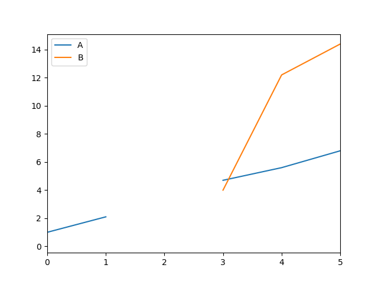

<!DOCTYPE html>

<html xmlns="http://www.w3.org/1999/xhtml">
  <head>
    <meta charset="utf-8" />
    <title>Working with missing data &#8212; pandas 0.25.3 documentation</title>
    <link rel="stylesheet" href="https://stackpath.bootstrapcdn.com/bootstrap/4.3.1/css/bootstrap.min.css" integrity="sha384-ggOyR0iXCbMQv3Xipma34MD+dH/1fQ784/j6cY/iJTQUOhcWr7x9JvoRxT2MZw1T" crossorigin="anonymous">
    <link rel="stylesheet" href="../_static/sphinx-bootstrap.css" type="text/css" />
    <link rel="stylesheet" href="../_static/pygments.css" type="text/css" />
    <link rel="stylesheet" type="text/css" href="../_static/css/getting_started.css" />
    <link href="../_static/css/custom.css" rel="stylesheet">
    <script type="text/javascript" id="documentation_options" data-url_root="../" src="../_static/documentation_options.js"></script>
    <script type="text/javascript" src="../_static/jquery.js"></script>
    <script type="text/javascript" src="../_static/underscore.js"></script>
    <script type="text/javascript" src="../_static/doctools.js"></script>
    <script type="text/javascript" src="../_static/language_data.js"></script>
    <script async="async" type="text/javascript" src="https://cdnjs.cloudflare.com/ajax/libs/mathjax/2.7.5/latest.js?config=TeX-AMS-MML_HTMLorMML"></script>
    <script type="text/x-mathjax-config">MathJax.Hub.Config({"tex2jax": {"inlineMath": [["$", "$"], ["\\(", "\\)"]], "processEscapes": true, "ignoreClass": "document", "processClass": "math|output_area"}})</script>
    <link rel="shortcut icon" href="../_static/favicon.ico"/>
    <link rel="index" title="Index" href="../genindex.html" />
    <link rel="search" title="Search" href="../search.html" />
    <link rel="next" title="Categorical Data" href="categorical.html" />
    <link rel="prev" title="Working with Text Data" href="text.html" />

    <meta name="viewport" content="width=device-width, initial-scale=1">
    <meta name="docsearch:language" content="en">

    <script src="https://cdnjs.cloudflare.com/ajax/libs/popper.js/1.14.7/umd/popper.min.js" integrity="sha384-UO2eT0CpHqdSJQ6hJty5KVphtPhzWj9WO1clHTMGa3JDZwrnQq4sF86dIHNDz0W1" crossorigin="anonymous"></script>
    <script src="https://stackpath.bootstrapcdn.com/bootstrap/4.3.1/js/bootstrap.min.js" integrity="sha384-JjSmVgyd0p3pXB1rRibZUAYoIIy6OrQ6VrjIEaFf/nJGzIxFDsf4x0xIM+B07jRM" crossorigin="anonymous"></script>
  </head>
  <body data-spy="scroll" data-target="#bd-toc-nav" data-offset="60">
    <nav class="navbar navbar-light navbar-expand-lg bg-light fixed-top bd-navbar" id="navbar-main">

<a class="navbar-brand" href="../index.html">
  
</a>

<button class="navbar-toggler" type="button" data-toggle="collapse" data-target="#navbar-menu" aria-controls="navbar-menu" aria-expanded="false" aria-label="Toggle navigation">
    <span class="navbar-toggler-icon"></span>
</button>

<div id="navbar-menu" class="collapse navbar-collapse">
  <ul id="navbar-main-elements" class="navbar-nav mr-auto">
    <li class="nav-item">
        <a class="nav-link" href="../index.html">Home</a>
    </li>
    
    
    <li class="nav-item ">
        <a class="nav-link" href="../getting_started/index.html">Getting started</a>
    </li>
    
    <li class="nav-item active">
        <a class="nav-link" href="index.html">User Guide</a>
    </li>
    
    <li class="nav-item ">
        <a class="nav-link" href="../reference/index.html">API Reference</a>
    </li>
    
    <li class="nav-item ">
        <a class="nav-link" href="../development/index.html">Development</a>
    </li>
    
    <li class="nav-item ">
        <a class="nav-link" href="../whatsnew/index.html">Release Notes</a>
    </li>
    
    <li class="nav-item ">
        <a class="nav-link" href="../development/index.html">Development</a>
    </li>
    
  </ul>
  <ul class="navbar-nav ml-auto">
    <li class="nav-item">
      <a class="nav-link" href="https://github.com/pandas-dev/pandas" target="_blank" rel="noopener">
        <span><i class="fab fa-github-alt" style="color:#333;font-size:1rem;line-height:1.25"></i></span>
      </a>
    </li>
    <li class="nav-item">
      <a class="nav-link" href="https://twitter.com/pandas_dev" target="_blank" rel="noopener">
        <span><i class="fab fa-twitter" style="color:#55acee;font-size:1rem;line-height:1.25"></i></span>
      </a>
    </li>
  </ul>
</div>
    </nav>

    <div class="container-fluid">
      <div class="row flex-xl-nowrap">
          <div class="col-12 col-md-3 col-xl-2 bd-sidebar">
              

<form class="bd-search d-flex align-items-center" action="../search.html" method="get">
  <input type="search" class="form-control" name="q" id="search-input" placeholder="Search the docs ..." aria-label="Search the docs ..." autocomplete="off" >
</form>

<nav class="bd-links" id="bd-docs-nav" aria-label="Main navigation">

  <div class="bd-toc-item active">
  

  <ul class="nav bd-sidenav">
      
      
      
      
        
          
              <li class="">
                  <a href="io.html">IO Tools (Text, CSV, HDF5, …)</a>
              </li>
          
        
          
              <li class="">
                  <a href="indexing.html">Indexing and Selecting Data</a>
              </li>
          
        
          
              <li class="">
                  <a href="advanced.html">MultiIndex / Advanced Indexing</a>
              </li>
          
        
          
              <li class="">
                  <a href="merging.html">Merge, join, and concatenate</a>
              </li>
          
        
          
              <li class="">
                  <a href="reshaping.html">Reshaping and Pivot Tables</a>
              </li>
          
        
          
              <li class="">
                  <a href="text.html">Working with Text Data</a>
              </li>
          
        
          
              <li class="active">
                  <a href="">Working with missing data</a>
              </li>
          
        
          
              <li class="">
                  <a href="categorical.html">Categorical Data</a>
              </li>
          
        
          
              <li class="">
                  <a href="integer_na.html">Nullable Integer Data Type</a>
              </li>
          
        
          
              <li class="">
                  <a href="visualization.html">Visualization</a>
              </li>
          
        
          
              <li class="">
                  <a href="computation.html">Computational tools</a>
              </li>
          
        
          
              <li class="">
                  <a href="groupby.html">Group By: split-apply-combine</a>
              </li>
          
        
          
              <li class="">
                  <a href="timeseries.html">Time Series / Date functionality</a>
              </li>
          
        
          
              <li class="">
                  <a href="timedeltas.html">Time Deltas</a>
              </li>
          
        
          
              <li class="">
                  <a href="options.html">Options and Settings</a>
              </li>
          
        
          
              <li class="">
                  <a href="enhancingperf.html">Enhancing Performance</a>
              </li>
          
        
          
              <li class="">
                  <a href="sparse.html">Sparse data structures</a>
              </li>
          
        
          
              <li class="">
                  <a href="gotchas.html">Frequently Asked Questions (FAQ)</a>
              </li>
          
        
          
              <li class="">
                  <a href="cookbook.html">Cookbook</a>
              </li>
          
        
      
      
      
      
      
      
      
      
      
      
    </ul>

</nav>


              
          </div>
          
          <div class="d-none d-xl-block col-xl-2 bd-toc">
              

<nav id="bd-toc-nav">
    <ul class="nav section-nav flex-column">
    
        <li class="nav-item toc-entry toc-h2">
            <a href="#values-considered-missing" class="nav-link">Values considered “missing”</a><ul class="nav section-nav flex-column">
                
        <li class="nav-item toc-entry toc-h3">
            <a href="#integer-dtypes-and-missing-data" class="nav-link">Integer Dtypes and Missing Data</a>
        </li>
    
        <li class="nav-item toc-entry toc-h3">
            <a href="#datetimes" class="nav-link">Datetimes</a>
        </li>
    
        <li class="nav-item toc-entry toc-h3">
            <a href="#inserting-missing-data" class="nav-link">Inserting missing data</a>
        </li>
    
        <li class="nav-item toc-entry toc-h3">
            <a href="#calculations-with-missing-data" class="nav-link">Calculations with missing data</a>
        </li>
    
            </ul>
        </li>
    
        <li class="nav-item toc-entry toc-h2">
            <a href="#sum-prod-of-empties-nans" class="nav-link">Sum/Prod of Empties/Nans</a>
        </li>
    
        <li class="nav-item toc-entry toc-h2">
            <a href="#na-values-in-groupby" class="nav-link">NA values in GroupBy</a><ul class="nav section-nav flex-column">
                
        <li class="nav-item toc-entry toc-h3">
            <a href="#cleaning-filling-missing-data" class="nav-link">Cleaning / filling missing data</a>
        </li>
    
            </ul>
        </li>
    
        <li class="nav-item toc-entry toc-h2">
            <a href="#filling-missing-values-fillna" class="nav-link">Filling missing values: fillna</a>
        </li>
    
        <li class="nav-item toc-entry toc-h2">
            <a href="#filling-with-a-pandasobject" class="nav-link">Filling with a PandasObject</a>
        </li>
    
        <li class="nav-item toc-entry toc-h2">
            <a href="#dropping-axis-labels-with-missing-data-dropna" class="nav-link">Dropping axis labels with missing data: dropna</a>
        </li>
    
        <li class="nav-item toc-entry toc-h2">
            <a href="#interpolation" class="nav-link">Interpolation</a>
        </li>
    
        <li class="nav-item toc-entry toc-h2">
            <a href="#replacing-generic-values" class="nav-link">Replacing Generic Values</a>
        </li>
    
        <li class="nav-item toc-entry toc-h2">
            <a href="#string-regular-expression-replacement" class="nav-link">String/Regular Expression Replacement</a>
        </li>
    
        <li class="nav-item toc-entry toc-h2">
            <a href="#numeric-replacement" class="nav-link">Numeric Replacement</a><ul class="nav section-nav flex-column">
                
        <li class="nav-item toc-entry toc-h3">
            <a href="#missing-data-casting-rules-and-indexing" class="nav-link">Missing data casting rules and indexing</a>
        </li>
    
            </ul>
        </li>
    
    </ul>
</nav>
              
            </div>

          <main class="col-12 col-md-9 col-xl-8 py-md-3 pl-md-5 bd-content" role="main">
              <div>
                
  <div class="section" id="working-with-missing-data">
<span id="missing-data"></span><h1>Working with missing data<a class="headerlink" href="#working-with-missing-data" title="Permalink to this headline">¶</a></h1>
<p>In this section, we will discuss missing (also referred to as NA) values in
pandas.</p>
<div class="alert alert-info">
<p class="admonition-title">Note</p>
<p>The choice of using <code class="docutils literal notranslate"><span class="pre">NaN</span></code> internally to denote missing data was largely
for simplicity and performance reasons. It differs from the MaskedArray
approach of, for example, <code class="xref py py-mod docutils literal notranslate"><span class="pre">scikits.timeseries</span></code>. We are hopeful that
NumPy will soon be able to provide a native NA type solution (similar to R)
performant enough to be used in pandas.</p>
</div>
<p>See the <a class="reference internal" href="cookbook.html#cookbook-missing-data"><span class="std std-ref">cookbook</span></a> for some advanced strategies.</p>
<div class="section" id="values-considered-missing">
<h2>Values considered “missing”<a class="headerlink" href="#values-considered-missing" title="Permalink to this headline">¶</a></h2>
<p>As data comes in many shapes and forms, pandas aims to be flexible with regard
to handling missing data. While <code class="docutils literal notranslate"><span class="pre">NaN</span></code> is the default missing value marker for
reasons of computational speed and convenience, we need to be able to easily
detect this value with data of different types: floating point, integer,
boolean, and general object. In many cases, however, the Python <code class="docutils literal notranslate"><span class="pre">None</span></code> will
arise and we wish to also consider that “missing” or “not available” or “NA”.</p>
<div class="alert alert-info">
<p class="admonition-title">Note</p>
<p>If you want to consider <code class="docutils literal notranslate"><span class="pre">inf</span></code> and <code class="docutils literal notranslate"><span class="pre">-inf</span></code> to be “NA” in computations,
you can set <code class="docutils literal notranslate"><span class="pre">pandas.options.mode.use_inf_as_na</span> <span class="pre">=</span> <span class="pre">True</span></code>.</p>
</div>
<div class="highlight-ipython notranslate" id="missing-isna"><div class="highlight"><pre><span></span><span class="gp">In [1]: </span><span class="n">df</span> <span class="o">=</span> <span class="n">pd</span><span class="o">.</span><span class="n">DataFrame</span><span class="p">(</span><span class="n">np</span><span class="o">.</span><span class="n">random</span><span class="o">.</span><span class="n">randn</span><span class="p">(</span><span class="mi">5</span><span class="p">,</span> <span class="mi">3</span><span class="p">),</span> <span class="n">index</span><span class="o">=</span><span class="p">[</span><span class="s1">&#39;a&#39;</span><span class="p">,</span> <span class="s1">&#39;c&#39;</span><span class="p">,</span> <span class="s1">&#39;e&#39;</span><span class="p">,</span> <span class="s1">&#39;f&#39;</span><span class="p">,</span> <span class="s1">&#39;h&#39;</span><span class="p">],</span>
<span class="gp">   ...: </span>                  <span class="n">columns</span><span class="o">=</span><span class="p">[</span><span class="s1">&#39;one&#39;</span><span class="p">,</span> <span class="s1">&#39;two&#39;</span><span class="p">,</span> <span class="s1">&#39;three&#39;</span><span class="p">])</span>
<span class="gp">   ...: </span>

<span class="gp">In [2]: </span><span class="n">df</span><span class="p">[</span><span class="s1">&#39;four&#39;</span><span class="p">]</span> <span class="o">=</span> <span class="s1">&#39;bar&#39;</span>

<span class="gp">In [3]: </span><span class="n">df</span><span class="p">[</span><span class="s1">&#39;five&#39;</span><span class="p">]</span> <span class="o">=</span> <span class="n">df</span><span class="p">[</span><span class="s1">&#39;one&#39;</span><span class="p">]</span> <span class="o">&gt;</span> <span class="mi">0</span>

<span class="gp">In [4]: </span><span class="n">df</span>
<span class="gh">Out[4]: </span><span class="go"></span>
<span class="go">        one       two     three four   five</span>
<span class="go">a  0.469112 -0.282863 -1.509059  bar   True</span>
<span class="go">c -1.135632  1.212112 -0.173215  bar  False</span>
<span class="go">e  0.119209 -1.044236 -0.861849  bar   True</span>
<span class="go">f -2.104569 -0.494929  1.071804  bar  False</span>
<span class="go">h  0.721555 -0.706771 -1.039575  bar   True</span>

<span class="gp">In [5]: </span><span class="n">df2</span> <span class="o">=</span> <span class="n">df</span><span class="o">.</span><span class="n">reindex</span><span class="p">([</span><span class="s1">&#39;a&#39;</span><span class="p">,</span> <span class="s1">&#39;b&#39;</span><span class="p">,</span> <span class="s1">&#39;c&#39;</span><span class="p">,</span> <span class="s1">&#39;d&#39;</span><span class="p">,</span> <span class="s1">&#39;e&#39;</span><span class="p">,</span> <span class="s1">&#39;f&#39;</span><span class="p">,</span> <span class="s1">&#39;g&#39;</span><span class="p">,</span> <span class="s1">&#39;h&#39;</span><span class="p">])</span>

<span class="gp">In [6]: </span><span class="n">df2</span>
<span class="gh">Out[6]: </span><span class="go"></span>
<span class="go">        one       two     three four   five</span>
<span class="go">a  0.469112 -0.282863 -1.509059  bar   True</span>
<span class="go">b       NaN       NaN       NaN  NaN    NaN</span>
<span class="go">c -1.135632  1.212112 -0.173215  bar  False</span>
<span class="go">d       NaN       NaN       NaN  NaN    NaN</span>
<span class="go">e  0.119209 -1.044236 -0.861849  bar   True</span>
<span class="go">f -2.104569 -0.494929  1.071804  bar  False</span>
<span class="go">g       NaN       NaN       NaN  NaN    NaN</span>
<span class="go">h  0.721555 -0.706771 -1.039575  bar   True</span>
</pre></div>
</div>
<p>To make detecting missing values easier (and across different array dtypes),
pandas provides the <a class="reference internal" href="../reference/api/pandas.isna.html#pandas.isna" title="pandas.isna"><code class="xref py py-func docutils literal notranslate"><span class="pre">isna()</span></code></a> and
<a class="reference internal" href="../reference/api/pandas.notna.html#pandas.notna" title="pandas.notna"><code class="xref py py-func docutils literal notranslate"><span class="pre">notna()</span></code></a> functions, which are also methods on
Series and DataFrame objects:</p>
<pre class="literal-block">In [7]: df2['one']
Out[7]: 
a    0.469112
b         NaN
c   -1.135632
d         NaN
e    0.119209
f   -2.104569
g         NaN
h    0.721555
Name: one, dtype: float64

In [8]: pd.isna(df2['one'])
Out[8]: 
a    False
b     True
c    False
d     True
e    False
f    False
g     True
h    False
Name: one, dtype: bool

In [9]: df2['four'].notna()
Out[9]: 
a     True
b    False
c     True
d    False
e     True
f     True
g    False
h     True
Name: four, dtype: bool

In [10]: df2.isna()
Out[10]: 
     one    two  three   four   five
a  False  False  False  False  False
b   True   True   True   True   True
c  False  False  False  False  False
d   True   True   True   True   True
e  False  False  False  False  False
f  False  False  False  False  False
g   True   True   True   True   True
h  False  False  False  False  False</pre>
<div class="alert alert-warning">
<p class="admonition-title">Warning</p>
<p>One has to be mindful that in Python (and NumPy), the <code class="docutils literal notranslate"><span class="pre">nan's</span></code> don’t compare equal, but <code class="docutils literal notranslate"><span class="pre">None's</span></code> <strong>do</strong>.
Note that pandas/NumPy uses the fact that <code class="docutils literal notranslate"><span class="pre">np.nan</span> <span class="pre">!=</span> <span class="pre">np.nan</span></code>, and treats <code class="docutils literal notranslate"><span class="pre">None</span></code> like <code class="docutils literal notranslate"><span class="pre">np.nan</span></code>.</p>
<pre class="literal-block">In [11]: None == None                                                 # noqa: E711
Out[11]: True

In [12]: np.nan == np.nan
Out[12]: False</pre>
<p>So as compared to above, a scalar equality comparison versus a <code class="docutils literal notranslate"><span class="pre">None/np.nan</span></code> doesn’t provide useful information.</p>
<div class="highlight-ipython notranslate"><div class="highlight"><pre><span></span><span class="gp">In [13]: </span><span class="n">df2</span><span class="p">[</span><span class="s1">&#39;one&#39;</span><span class="p">]</span> <span class="o">==</span> <span class="n">np</span><span class="o">.</span><span class="n">nan</span>
<span class="gh">Out[13]: </span><span class="go"></span>
<span class="go">a    False</span>
<span class="go">b    False</span>
<span class="go">c    False</span>
<span class="go">d    False</span>
<span class="go">e    False</span>
<span class="go">f    False</span>
<span class="go">g    False</span>
<span class="go">h    False</span>
<span class="go">Name: one, dtype: bool</span>
</pre></div>
</div>
</div>
<div class="section" id="integer-dtypes-and-missing-data">
<h3>Integer Dtypes and Missing Data<a class="headerlink" href="#integer-dtypes-and-missing-data" title="Permalink to this headline">¶</a></h3>
<p>Because <code class="docutils literal notranslate"><span class="pre">NaN</span></code> is a float, a column of integers with even one missing values
is cast to floating-point dtype (see <a class="reference internal" href="gotchas.html#gotchas-intna"><span class="std std-ref">Support for integer NA</span></a> for more). Pandas
provides a nullable integer array, which can be used by explicitly requesting
the dtype:</p>
<div class="highlight-ipython notranslate"><div class="highlight"><pre><span></span><span class="gp">In [14]: </span><span class="n">pd</span><span class="o">.</span><span class="n">Series</span><span class="p">([</span><span class="mi">1</span><span class="p">,</span> <span class="mi">2</span><span class="p">,</span> <span class="n">np</span><span class="o">.</span><span class="n">nan</span><span class="p">,</span> <span class="mi">4</span><span class="p">],</span> <span class="n">dtype</span><span class="o">=</span><span class="n">pd</span><span class="o">.</span><span class="n">Int64Dtype</span><span class="p">())</span>
<span class="gh">Out[14]: </span><span class="go"></span>
<span class="go">0      1</span>
<span class="go">1      2</span>
<span class="go">2    NaN</span>
<span class="go">3      4</span>
<span class="go">dtype: Int64</span>
</pre></div>
</div>
<p>Alternatively, the string alias <code class="docutils literal notranslate"><span class="pre">dtype='Int64'</span></code> (note the capital <code class="docutils literal notranslate"><span class="pre">&quot;I&quot;</span></code>) can be
used.</p>
<p>See <a class="reference internal" href="integer_na.html#integer-na"><span class="std std-ref">Nullable Integer Data Type</span></a> for more.</p>
</div>
<div class="section" id="datetimes">
<h3>Datetimes<a class="headerlink" href="#datetimes" title="Permalink to this headline">¶</a></h3>
<p>For datetime64[ns] types, <code class="docutils literal notranslate"><span class="pre">NaT</span></code> represents missing values. This is a pseudo-native
sentinel value that can be represented by NumPy in a singular dtype (datetime64[ns]).
pandas objects provide compatibility between <code class="docutils literal notranslate"><span class="pre">NaT</span></code> and <code class="docutils literal notranslate"><span class="pre">NaN</span></code>.</p>
<pre class="literal-block">In [15]: df2 = df.copy()

In [16]: df2['timestamp'] = pd.Timestamp('20120101')

In [17]: df2
Out[17]: 
        one       two     three four   five  timestamp
a  0.469112 -0.282863 -1.509059  bar   True 2012-01-01
c -1.135632  1.212112 -0.173215  bar  False 2012-01-01
e  0.119209 -1.044236 -0.861849  bar   True 2012-01-01
f -2.104569 -0.494929  1.071804  bar  False 2012-01-01
h  0.721555 -0.706771 -1.039575  bar   True 2012-01-01

In [18]: df2.loc[['a', 'c', 'h'], ['one', 'timestamp']] = np.nan

In [19]: df2
Out[19]: 
        one       two     three four   five  timestamp
a       NaN -0.282863 -1.509059  bar   True        NaT
c       NaN  1.212112 -0.173215  bar  False        NaT
e  0.119209 -1.044236 -0.861849  bar   True 2012-01-01
f -2.104569 -0.494929  1.071804  bar  False 2012-01-01
h       NaN -0.706771 -1.039575  bar   True        NaT

In [20]: df2.get_dtype_counts()
Out[20]: 
float64           3
object            1
bool              1
datetime64[ns]    1
dtype: int64</pre>
</div>
<div class="section" id="inserting-missing-data">
<span id="missing-inserting"></span><h3>Inserting missing data<a class="headerlink" href="#inserting-missing-data" title="Permalink to this headline">¶</a></h3>
<p>You can insert missing values by simply assigning to containers. The
actual missing value used will be chosen based on the dtype.</p>
<p>For example, numeric containers will always use <code class="docutils literal notranslate"><span class="pre">NaN</span></code> regardless of
the missing value type chosen:</p>
<div class="highlight-ipython notranslate"><div class="highlight"><pre><span></span><span class="gp">In [21]: </span><span class="n">s</span> <span class="o">=</span> <span class="n">pd</span><span class="o">.</span><span class="n">Series</span><span class="p">([</span><span class="mi">1</span><span class="p">,</span> <span class="mi">2</span><span class="p">,</span> <span class="mi">3</span><span class="p">])</span>

<span class="gp">In [22]: </span><span class="n">s</span><span class="o">.</span><span class="n">loc</span><span class="p">[</span><span class="mi">0</span><span class="p">]</span> <span class="o">=</span> <span class="bp">None</span>

<span class="gp">In [23]: </span><span class="n">s</span>
<span class="gh">Out[23]: </span><span class="go"></span>
<span class="go">0    NaN</span>
<span class="go">1    2.0</span>
<span class="go">2    3.0</span>
<span class="go">dtype: float64</span>
</pre></div>
</div>
<p>Likewise, datetime containers will always use <code class="docutils literal notranslate"><span class="pre">NaT</span></code>.</p>
<p>For object containers, pandas will use the value given:</p>
<div class="highlight-ipython notranslate"><div class="highlight"><pre><span></span><span class="gp">In [24]: </span><span class="n">s</span> <span class="o">=</span> <span class="n">pd</span><span class="o">.</span><span class="n">Series</span><span class="p">([</span><span class="s2">&quot;a&quot;</span><span class="p">,</span> <span class="s2">&quot;b&quot;</span><span class="p">,</span> <span class="s2">&quot;c&quot;</span><span class="p">])</span>

<span class="gp">In [25]: </span><span class="n">s</span><span class="o">.</span><span class="n">loc</span><span class="p">[</span><span class="mi">0</span><span class="p">]</span> <span class="o">=</span> <span class="bp">None</span>

<span class="gp">In [26]: </span><span class="n">s</span><span class="o">.</span><span class="n">loc</span><span class="p">[</span><span class="mi">1</span><span class="p">]</span> <span class="o">=</span> <span class="n">np</span><span class="o">.</span><span class="n">nan</span>

<span class="gp">In [27]: </span><span class="n">s</span>
<span class="gh">Out[27]: </span><span class="go"></span>
<span class="go">0    None</span>
<span class="go">1     NaN</span>
<span class="go">2       c</span>
<span class="go">dtype: object</span>
</pre></div>
</div>
</div>
<div class="section" id="calculations-with-missing-data">
<h3>Calculations with missing data<a class="headerlink" href="#calculations-with-missing-data" title="Permalink to this headline">¶</a></h3>
<p>Missing values propagate naturally through arithmetic operations between pandas
objects.</p>
<pre class="literal-block">In [28]: a
Out[28]: 
        one       two
a       NaN -0.282863
c       NaN  1.212112
e  0.119209 -1.044236
f -2.104569 -0.494929
h -2.104569 -0.706771

In [29]: b
Out[29]: 
        one       two     three
a       NaN -0.282863 -1.509059
c       NaN  1.212112 -0.173215
e  0.119209 -1.044236 -0.861849
f -2.104569 -0.494929  1.071804
h       NaN -0.706771 -1.039575

In [30]: a + b
Out[30]: 
        one  three       two
a       NaN    NaN -0.565727
c       NaN    NaN  2.424224
e  0.238417    NaN -2.088472
f -4.209138    NaN -0.989859
h       NaN    NaN -1.413542</pre>
<p>The descriptive statistics and computational methods discussed in the
<a class="reference internal" href="../getting_started/basics.html#basics-stats"><span class="std std-ref">data structure overview</span></a> (and listed <span class="xref std std-ref">here</span> and <a class="reference internal" href="../reference/frame.html#api-dataframe-stats"><span class="std std-ref">here</span></a>) are all written to
account for missing data. For example:</p>
<ul class="simple">
<li><p>When summing data, NA (missing) values will be treated as zero.</p></li>
<li><p>If the data are all NA, the result will be 0.</p></li>
<li><p>Cumulative methods like <a class="reference internal" href="../reference/api/pandas.DataFrame.cumsum.html#pandas.DataFrame.cumsum" title="pandas.DataFrame.cumsum"><code class="xref py py-meth docutils literal notranslate"><span class="pre">cumsum()</span></code></a> and <a class="reference internal" href="../reference/api/pandas.DataFrame.cumprod.html#pandas.DataFrame.cumprod" title="pandas.DataFrame.cumprod"><code class="xref py py-meth docutils literal notranslate"><span class="pre">cumprod()</span></code></a> ignore NA values by default, but preserve them in the resulting arrays. To override this behaviour and include NA values, use <code class="docutils literal notranslate"><span class="pre">skipna=False</span></code>.</p></li>
</ul>
<pre class="literal-block">In [31]: df
Out[31]: 
        one       two     three
a       NaN -0.282863 -1.509059
c       NaN  1.212112 -0.173215
e  0.119209 -1.044236 -0.861849
f -2.104569 -0.494929  1.071804
h       NaN -0.706771 -1.039575

In [32]: df['one'].sum()
Out[32]: -1.9853605075978744

In [33]: df.mean(1)
Out[33]: 
a   -0.895961
c    0.519449
e   -0.595625
f   -0.509232
h   -0.873173
dtype: float64

In [34]: df.cumsum()
Out[34]: 
        one       two     three
a       NaN -0.282863 -1.509059
c       NaN  0.929249 -1.682273
e  0.119209 -0.114987 -2.544122
f -1.985361 -0.609917 -1.472318
h       NaN -1.316688 -2.511893

In [35]: df.cumsum(skipna=False)
Out[35]: 
   one       two     three
a  NaN -0.282863 -1.509059
c  NaN  0.929249 -1.682273
e  NaN -0.114987 -2.544122
f  NaN -0.609917 -1.472318
h  NaN -1.316688 -2.511893</pre>
</div>
</div>
<div class="section" id="sum-prod-of-empties-nans">
<span id="missing-data-numeric-sum"></span><h2>Sum/Prod of Empties/Nans<a class="headerlink" href="#sum-prod-of-empties-nans" title="Permalink to this headline">¶</a></h2>
<div class="alert alert-warning">
<p class="admonition-title">Warning</p>
<p>This behavior is now standard as of v0.22.0 and is consistent with the default in <code class="docutils literal notranslate"><span class="pre">numpy</span></code>; previously sum/prod of all-NA or empty Series/DataFrames would return NaN.
See <a class="reference internal" href="../whatsnew/v0.22.0.html#whatsnew-0220"><span class="std std-ref">v0.22.0 whatsnew</span></a> for more.</p>
</div>
<p>The sum of an empty or all-NA Series or column of a DataFrame is 0.</p>
<pre class="literal-block">In [36]: pd.Series([np.nan]).sum()
Out[36]: 0.0

In [37]: pd.Series([]).sum()
Out[37]: 0.0</pre>
<p>The product of an empty or all-NA Series or column of a DataFrame is 1.</p>
<pre class="literal-block">In [38]: pd.Series([np.nan]).prod()
Out[38]: 1.0

In [39]: pd.Series([]).prod()
Out[39]: 1.0</pre>
</div>
<div class="section" id="na-values-in-groupby">
<h2>NA values in GroupBy<a class="headerlink" href="#na-values-in-groupby" title="Permalink to this headline">¶</a></h2>
<p>NA groups in GroupBy are automatically excluded. This behavior is consistent
with R, for example:</p>
<pre class="literal-block">In [40]: df
Out[40]: 
        one       two     three
a       NaN -0.282863 -1.509059
c       NaN  1.212112 -0.173215
e  0.119209 -1.044236 -0.861849
f -2.104569 -0.494929  1.071804
h       NaN -0.706771 -1.039575

In [41]: df.groupby('one').mean()
Out[41]: 
                two     three
one                          
-2.104569 -0.494929  1.071804
 0.119209 -1.044236 -0.861849</pre>
<p>See the groupby section <a class="reference internal" href="groupby.html#groupby-missing"><span class="std std-ref">here</span></a> for more information.</p>
<div class="section" id="cleaning-filling-missing-data">
<h3>Cleaning / filling missing data<a class="headerlink" href="#cleaning-filling-missing-data" title="Permalink to this headline">¶</a></h3>
<p>pandas objects are equipped with various data manipulation methods for dealing
with missing data.</p>
</div>
</div>
<div class="section" id="filling-missing-values-fillna">
<span id="missing-data-fillna"></span><h2>Filling missing values: fillna<a class="headerlink" href="#filling-missing-values-fillna" title="Permalink to this headline">¶</a></h2>
<p><a class="reference internal" href="../reference/api/pandas.DataFrame.fillna.html#pandas.DataFrame.fillna" title="pandas.DataFrame.fillna"><code class="xref py py-meth docutils literal notranslate"><span class="pre">fillna()</span></code></a> can “fill in” NA values with non-NA data in a couple
of ways, which we illustrate:</p>
<p><strong>Replace NA with a scalar value</strong></p>
<pre class="literal-block">In [42]: df2
Out[42]: 
        one       two     three four   five  timestamp
a       NaN -0.282863 -1.509059  bar   True        NaT
c       NaN  1.212112 -0.173215  bar  False        NaT
e  0.119209 -1.044236 -0.861849  bar   True 2012-01-01
f -2.104569 -0.494929  1.071804  bar  False 2012-01-01
h       NaN -0.706771 -1.039575  bar   True        NaT

In [43]: df2.fillna(0)
Out[43]: 
        one       two     three four   five            timestamp
a  0.000000 -0.282863 -1.509059  bar   True                    0
c  0.000000  1.212112 -0.173215  bar  False                    0
e  0.119209 -1.044236 -0.861849  bar   True  2012-01-01 00:00:00
f -2.104569 -0.494929  1.071804  bar  False  2012-01-01 00:00:00
h  0.000000 -0.706771 -1.039575  bar   True                    0

In [44]: df2['one'].fillna('missing')
Out[44]: 
a     missing
c     missing
e    0.119209
f    -2.10457
h     missing
Name: one, dtype: object</pre>
<p><strong>Fill gaps forward or backward</strong></p>
<p>Using the same filling arguments as <a class="reference internal" href="../getting_started/basics.html#basics-reindexing"><span class="std std-ref">reindexing</span></a>, we
can propagate non-NA values forward or backward:</p>
<pre class="literal-block">In [45]: df
Out[45]: 
        one       two     three
a       NaN -0.282863 -1.509059
c       NaN  1.212112 -0.173215
e  0.119209 -1.044236 -0.861849
f -2.104569 -0.494929  1.071804
h       NaN -0.706771 -1.039575

In [46]: df.fillna(method='pad')
Out[46]: 
        one       two     three
a       NaN -0.282863 -1.509059
c       NaN  1.212112 -0.173215
e  0.119209 -1.044236 -0.861849
f -2.104569 -0.494929  1.071804
h -2.104569 -0.706771 -1.039575</pre>
<p id="missing-data-fillna-limit"><strong>Limit the amount of filling</strong></p>
<p>If we only want consecutive gaps filled up to a certain number of data points,
we can use the <cite>limit</cite> keyword:</p>
<pre class="literal-block">In [47]: df
Out[47]: 
   one       two     three
a  NaN -0.282863 -1.509059
c  NaN  1.212112 -0.173215
e  NaN       NaN       NaN
f  NaN       NaN       NaN
h  NaN -0.706771 -1.039575

In [48]: df.fillna(method='pad', limit=1)
Out[48]: 
   one       two     three
a  NaN -0.282863 -1.509059
c  NaN  1.212112 -0.173215
e  NaN  1.212112 -0.173215
f  NaN       NaN       NaN
h  NaN -0.706771 -1.039575</pre>
<p>To remind you, these are the available filling methods:</p>
<table class="colwidths-given table">
<colgroup>
<col style="width: 38%" />
<col style="width: 63%" />
</colgroup>
<thead>
<tr class="row-odd"><th class="head"><p>Method</p></th>
<th class="head"><p>Action</p></th>
</tr>
</thead>
<tbody>
<tr class="row-even"><td><p>pad / ffill</p></td>
<td><p>Fill values forward</p></td>
</tr>
<tr class="row-odd"><td><p>bfill / backfill</p></td>
<td><p>Fill values backward</p></td>
</tr>
</tbody>
</table>
<p>With time series data, using pad/ffill is extremely common so that the “last
known value” is available at every time point.</p>
<p><a class="reference internal" href="../reference/api/pandas.DataFrame.ffill.html#pandas.DataFrame.ffill" title="pandas.DataFrame.ffill"><code class="xref py py-meth docutils literal notranslate"><span class="pre">ffill()</span></code></a> is equivalent to <code class="docutils literal notranslate"><span class="pre">fillna(method='ffill')</span></code>
and <a class="reference internal" href="../reference/api/pandas.DataFrame.bfill.html#pandas.DataFrame.bfill" title="pandas.DataFrame.bfill"><code class="xref py py-meth docutils literal notranslate"><span class="pre">bfill()</span></code></a> is equivalent to <code class="docutils literal notranslate"><span class="pre">fillna(method='bfill')</span></code></p>
</div>
<div class="section" id="filling-with-a-pandasobject">
<span id="missing-data-pandasobject"></span><h2>Filling with a PandasObject<a class="headerlink" href="#filling-with-a-pandasobject" title="Permalink to this headline">¶</a></h2>
<p>You can also fillna using a dict or Series that is alignable. The labels of the dict or index of the Series
must match the columns of the frame you wish to fill. The
use case of this is to fill a DataFrame with the mean of that column.</p>
<pre class="literal-block">In [49]: dff = pd.DataFrame(np.random.randn(10, 3), columns=list('ABC'))

In [50]: dff.iloc[3:5, 0] = np.nan

In [51]: dff.iloc[4:6, 1] = np.nan

In [52]: dff.iloc[5:8, 2] = np.nan

In [53]: dff
Out[53]: 
          A         B         C
0  0.271860 -0.424972  0.567020
1  0.276232 -1.087401 -0.673690
2  0.113648 -1.478427  0.524988
3       NaN  0.577046 -1.715002
4       NaN       NaN -1.157892
5 -1.344312       NaN       NaN
6 -0.109050  1.643563       NaN
7  0.357021 -0.674600       NaN
8 -0.968914 -1.294524  0.413738
9  0.276662 -0.472035 -0.013960

In [54]: dff.fillna(dff.mean())
Out[54]: 
          A         B         C
0  0.271860 -0.424972  0.567020
1  0.276232 -1.087401 -0.673690
2  0.113648 -1.478427  0.524988
3 -0.140857  0.577046 -1.715002
4 -0.140857 -0.401419 -1.157892
5 -1.344312 -0.401419 -0.293543
6 -0.109050  1.643563 -0.293543
7  0.357021 -0.674600 -0.293543
8 -0.968914 -1.294524  0.413738
9  0.276662 -0.472035 -0.013960

In [55]: dff.fillna(dff.mean()['B':'C'])
Out[55]: 
          A         B         C
0  0.271860 -0.424972  0.567020
1  0.276232 -1.087401 -0.673690
2  0.113648 -1.478427  0.524988
3       NaN  0.577046 -1.715002
4       NaN -0.401419 -1.157892
5 -1.344312 -0.401419 -0.293543
6 -0.109050  1.643563 -0.293543
7  0.357021 -0.674600 -0.293543
8 -0.968914 -1.294524  0.413738
9  0.276662 -0.472035 -0.013960</pre>
<p>Same result as above, but is aligning the ‘fill’ value which is
a Series in this case.</p>
<div class="highlight-ipython notranslate"><div class="highlight"><pre><span></span><span class="gp">In [56]: </span><span class="n">dff</span><span class="o">.</span><span class="n">where</span><span class="p">(</span><span class="n">pd</span><span class="o">.</span><span class="n">notna</span><span class="p">(</span><span class="n">dff</span><span class="p">),</span> <span class="n">dff</span><span class="o">.</span><span class="n">mean</span><span class="p">(),</span> <span class="n">axis</span><span class="o">=</span><span class="s1">&#39;columns&#39;</span><span class="p">)</span>
<span class="gh">Out[56]: </span><span class="go"></span>
<span class="go">          A         B         C</span>
<span class="go">0  0.271860 -0.424972  0.567020</span>
<span class="go">1  0.276232 -1.087401 -0.673690</span>
<span class="go">2  0.113648 -1.478427  0.524988</span>
<span class="go">3 -0.140857  0.577046 -1.715002</span>
<span class="go">4 -0.140857 -0.401419 -1.157892</span>
<span class="go">5 -1.344312 -0.401419 -0.293543</span>
<span class="go">6 -0.109050  1.643563 -0.293543</span>
<span class="go">7  0.357021 -0.674600 -0.293543</span>
<span class="go">8 -0.968914 -1.294524  0.413738</span>
<span class="go">9  0.276662 -0.472035 -0.013960</span>
</pre></div>
</div>
</div>
<div class="section" id="dropping-axis-labels-with-missing-data-dropna">
<span id="missing-data-dropna"></span><h2>Dropping axis labels with missing data: dropna<a class="headerlink" href="#dropping-axis-labels-with-missing-data-dropna" title="Permalink to this headline">¶</a></h2>
<p>You may wish to simply exclude labels from a data set which refer to missing
data. To do this, use <a class="reference internal" href="../reference/api/pandas.DataFrame.dropna.html#pandas.DataFrame.dropna" title="pandas.DataFrame.dropna"><code class="xref py py-meth docutils literal notranslate"><span class="pre">dropna()</span></code></a>:</p>
<pre class="literal-block">In [57]: df
Out[57]: 
   one       two     three
a  NaN -0.282863 -1.509059
c  NaN  1.212112 -0.173215
e  NaN  0.000000  0.000000
f  NaN  0.000000  0.000000
h  NaN -0.706771 -1.039575

In [58]: df.dropna(axis=0)
Out[58]: 
Empty DataFrame
Columns: [one, two, three]
Index: []

In [59]: df.dropna(axis=1)
Out[59]: 
        two     three
a -0.282863 -1.509059
c  1.212112 -0.173215
e  0.000000  0.000000
f  0.000000  0.000000
h -0.706771 -1.039575

In [60]: df['one'].dropna()
Out[60]: Series([], Name: one, dtype: float64)</pre>
<p>An equivalent <code class="xref py py-meth docutils literal notranslate"><span class="pre">dropna()</span></code> is available for Series.
DataFrame.dropna has considerably more options than Series.dropna, which can be
examined <a class="reference internal" href="../reference/frame.html#api-dataframe-missing"><span class="std std-ref">in the API</span></a>.</p>
</div>
<div class="section" id="interpolation">
<span id="missing-data-interpolate"></span><h2>Interpolation<a class="headerlink" href="#interpolation" title="Permalink to this headline">¶</a></h2>
<div class="versionadded">
<p><span class="versionmodified added">New in version 0.23.0: </span>The <code class="docutils literal notranslate"><span class="pre">limit_area</span></code> keyword argument was added.</p>
</div>
<p>Both Series and DataFrame objects have <a class="reference internal" href="../reference/api/pandas.DataFrame.interpolate.html#pandas.DataFrame.interpolate" title="pandas.DataFrame.interpolate"><code class="xref py py-meth docutils literal notranslate"><span class="pre">interpolate()</span></code></a>
that, by default, performs linear interpolation at missing data points.</p>
<pre class="literal-block">In [61]: ts
Out[61]: 
2000-01-31    0.469112
2000-02-29         NaN
2000-03-31         NaN
2000-04-28         NaN
2000-05-31         NaN
                ...   
2007-12-31   -6.854968
2008-01-31   -7.809176
2008-02-29   -6.346480
2008-03-31   -8.089641
2008-04-30   -8.916232
Freq: BM, Length: 100, dtype: float64

In [62]: ts.count()
Out[62]: 61

In [63]: ts.interpolate().count()
Out[63]: 100

In [64]: ts.interpolate().plot()
Out[64]: &lt;matplotlib.axes._subplots.AxesSubplot at 0x7f4bbfa4f4d0&gt;</pre>

<p>Index aware interpolation is available via the <code class="docutils literal notranslate"><span class="pre">method</span></code> keyword:</p>
<pre class="literal-block">In [65]: ts2
Out[65]: 
2000-01-31    0.469112
2000-02-29         NaN
2002-07-31   -5.689738
2005-01-31         NaN
2008-04-30   -8.916232
dtype: float64

In [66]: ts2.interpolate()
Out[66]: 
2000-01-31    0.469112
2000-02-29   -2.610313
2002-07-31   -5.689738
2005-01-31   -7.302985
2008-04-30   -8.916232
dtype: float64

In [67]: ts2.interpolate(method='time')
Out[67]: 
2000-01-31    0.469112
2000-02-29    0.273272
2002-07-31   -5.689738
2005-01-31   -7.095568
2008-04-30   -8.916232
dtype: float64</pre>
<p>For a floating-point index, use <code class="docutils literal notranslate"><span class="pre">method='values'</span></code>:</p>
<pre class="literal-block">In [68]: ser
Out[68]: 
0.0      0.0
1.0      NaN
10.0    10.0
dtype: float64

In [69]: ser.interpolate()
Out[69]: 
0.0      0.0
1.0      5.0
10.0    10.0
dtype: float64

In [70]: ser.interpolate(method='values')
Out[70]: 
0.0      0.0
1.0      1.0
10.0    10.0
dtype: float64</pre>
<p>You can also interpolate with a DataFrame:</p>
<pre class="literal-block">In [71]: df = pd.DataFrame({'A': [1, 2.1, np.nan, 4.7, 5.6, 6.8],
   ....:                    'B': [.25, np.nan, np.nan, 4, 12.2, 14.4]})
   ....: 

In [72]: df
Out[72]: 
     A      B
0  1.0   0.25
1  2.1    NaN
2  NaN    NaN
3  4.7   4.00
4  5.6  12.20
5  6.8  14.40

In [73]: df.interpolate()
Out[73]: 
     A      B
0  1.0   0.25
1  2.1   1.50
2  3.4   2.75
3  4.7   4.00
4  5.6  12.20
5  6.8  14.40</pre>
<p>The <code class="docutils literal notranslate"><span class="pre">method</span></code> argument gives access to fancier interpolation methods.
If you have <a class="reference external" href="http://www.scipy.org">scipy</a> installed, you can pass the name of a 1-d interpolation routine to <code class="docutils literal notranslate"><span class="pre">method</span></code>.
You’ll want to consult the full scipy interpolation <a class="reference external" href="http://docs.scipy.org/doc/scipy/reference/interpolate.html#univariate-interpolation">documentation</a> and reference <a class="reference external" href="http://docs.scipy.org/doc/scipy/reference/tutorial/interpolate.html">guide</a> for details.
The appropriate interpolation method will depend on the type of data you are working with.</p>
<ul class="simple">
<li><p>If you are dealing with a time series that is growing at an increasing rate,
<code class="docutils literal notranslate"><span class="pre">method='quadratic'</span></code> may be appropriate.</p></li>
<li><p>If you have values approximating a cumulative distribution function,
then <code class="docutils literal notranslate"><span class="pre">method='pchip'</span></code> should work well.</p></li>
<li><p>To fill missing values with goal of smooth plotting, consider <code class="docutils literal notranslate"><span class="pre">method='akima'</span></code>.</p></li>
</ul>
<div class="alert alert-warning">
<p class="admonition-title">Warning</p>
<p>These methods require <code class="docutils literal notranslate"><span class="pre">scipy</span></code>.</p>
</div>
<pre class="literal-block">In [74]: df.interpolate(method='barycentric')
---------------------------------------------------------------------------
ImportError                               Traceback (most recent call last)
&lt;ipython-input-74-8fb4b08c32ac&gt; in &lt;module&gt;
----&gt; 1 df.interpolate(method='barycentric')

~/miniconda/lib/python3.7/site-packages/pandas/core/generic.py in interpolate(self, method, axis, limit, inplace, limit_direction, limit_area, downcast, **kwargs)
   7062             inplace=inplace,
   7063             downcast=downcast,
-&gt; 7064             **kwargs
   7065         )
   7066 

~/miniconda/lib/python3.7/site-packages/pandas/core/internals/managers.py in interpolate(self, **kwargs)
    567 
    568     def interpolate(self, **kwargs):
--&gt; 569         return self.apply(&quot;interpolate&quot;, **kwargs)
    570 
    571     def shift(self, **kwargs):

~/miniconda/lib/python3.7/site-packages/pandas/core/internals/managers.py in apply(self, f, axes, filter, do_integrity_check, consolidate, **kwargs)
    436                     kwargs[k] = obj.reindex(b_items, axis=axis, copy=align_copy)
    437 
--&gt; 438             applied = getattr(b, f)(**kwargs)
    439             result_blocks = _extend_blocks(applied, result_blocks)
    440 

~/miniconda/lib/python3.7/site-packages/pandas/core/internals/blocks.py in interpolate(self, method, axis, index, values, inplace, limit, limit_direction, limit_area, fill_value, coerce, downcast, **kwargs)
   1190             inplace=inplace,
   1191             downcast=downcast,
-&gt; 1192             **kwargs
   1193         )
   1194 

~/miniconda/lib/python3.7/site-packages/pandas/core/internals/blocks.py in _interpolate(self, method, index, values, fill_value, axis, limit, limit_direction, limit_area, inplace, downcast, **kwargs)
   1286 
   1287         # interp each column independently
-&gt; 1288         interp_values = np.apply_along_axis(func, axis, data)
   1289 
   1290         blocks = [self.make_block_same_class(interp_values)]

&lt;__array_function__ internals&gt; in apply_along_axis(*args, **kwargs)

~/miniconda/lib/python3.7/site-packages/numpy/lib/shape_base.py in apply_along_axis(func1d, axis, arr, *args, **kwargs)
    377     except StopIteration:
    378         raise ValueError('Cannot apply_along_axis when any iteration dimensions are 0')
--&gt; 379     res = asanyarray(func1d(inarr_view[ind0], *args, **kwargs))
    380 
    381     # build a buffer for storing evaluations of func1d.

~/miniconda/lib/python3.7/site-packages/pandas/core/internals/blocks.py in func(x)
   1282                 fill_value=fill_value,
   1283                 bounds_error=False,
-&gt; 1284                 **kwargs
   1285             )
   1286 

~/miniconda/lib/python3.7/site-packages/pandas/core/missing.py in interpolate_1d(xvalues, yvalues, method, limit, limit_direction, limit_area, fill_value, bounds_error, order, **kwargs)
    286             bounds_error=bounds_error,
    287             order=order,
--&gt; 288             **kwargs
    289         )
    290         result[preserve_nans] = np.nan

~/miniconda/lib/python3.7/site-packages/pandas/core/missing.py in _interpolate_scipy_wrapper(x, y, new_x, method, fill_value, bounds_error, order, **kwargs)
    301     &quot;&quot;&quot;
    302     extra = &quot;{method} interpolation requires SciPy.&quot;.format(method=method)
--&gt; 303     import_optional_dependency(&quot;scipy&quot;, extra=extra)
    304     from scipy import interpolate
    305 

~/miniconda/lib/python3.7/site-packages/pandas/compat/_optional.py in import_optional_dependency(name, extra, raise_on_missing, on_version)
     91     except ImportError:
     92         if raise_on_missing:
---&gt; 93             raise ImportError(message.format(name=name, extra=extra)) from None
     94         else:
     95             return None

ImportError: Missing optional dependency 'scipy'. barycentric interpolation requires SciPy. Use pip or conda to install scipy.

In [75]: df.interpolate(method='pchip')
---------------------------------------------------------------------------
ImportError                               Traceback (most recent call last)
&lt;ipython-input-75-df32c905a5af&gt; in &lt;module&gt;
----&gt; 1 df.interpolate(method='pchip')

~/miniconda/lib/python3.7/site-packages/pandas/core/generic.py in interpolate(self, method, axis, limit, inplace, limit_direction, limit_area, downcast, **kwargs)
   7062             inplace=inplace,
   7063             downcast=downcast,
-&gt; 7064             **kwargs
   7065         )
   7066 

~/miniconda/lib/python3.7/site-packages/pandas/core/internals/managers.py in interpolate(self, **kwargs)
    567 
    568     def interpolate(self, **kwargs):
--&gt; 569         return self.apply(&quot;interpolate&quot;, **kwargs)
    570 
    571     def shift(self, **kwargs):

~/miniconda/lib/python3.7/site-packages/pandas/core/internals/managers.py in apply(self, f, axes, filter, do_integrity_check, consolidate, **kwargs)
    436                     kwargs[k] = obj.reindex(b_items, axis=axis, copy=align_copy)
    437 
--&gt; 438             applied = getattr(b, f)(**kwargs)
    439             result_blocks = _extend_blocks(applied, result_blocks)
    440 

~/miniconda/lib/python3.7/site-packages/pandas/core/internals/blocks.py in interpolate(self, method, axis, index, values, inplace, limit, limit_direction, limit_area, fill_value, coerce, downcast, **kwargs)
   1190             inplace=inplace,
   1191             downcast=downcast,
-&gt; 1192             **kwargs
   1193         )
   1194 

~/miniconda/lib/python3.7/site-packages/pandas/core/internals/blocks.py in _interpolate(self, method, index, values, fill_value, axis, limit, limit_direction, limit_area, inplace, downcast, **kwargs)
   1286 
   1287         # interp each column independently
-&gt; 1288         interp_values = np.apply_along_axis(func, axis, data)
   1289 
   1290         blocks = [self.make_block_same_class(interp_values)]

&lt;__array_function__ internals&gt; in apply_along_axis(*args, **kwargs)

~/miniconda/lib/python3.7/site-packages/numpy/lib/shape_base.py in apply_along_axis(func1d, axis, arr, *args, **kwargs)
    377     except StopIteration:
    378         raise ValueError('Cannot apply_along_axis when any iteration dimensions are 0')
--&gt; 379     res = asanyarray(func1d(inarr_view[ind0], *args, **kwargs))
    380 
    381     # build a buffer for storing evaluations of func1d.

~/miniconda/lib/python3.7/site-packages/pandas/core/internals/blocks.py in func(x)
   1282                 fill_value=fill_value,
   1283                 bounds_error=False,
-&gt; 1284                 **kwargs
   1285             )
   1286 

~/miniconda/lib/python3.7/site-packages/pandas/core/missing.py in interpolate_1d(xvalues, yvalues, method, limit, limit_direction, limit_area, fill_value, bounds_error, order, **kwargs)
    286             bounds_error=bounds_error,
    287             order=order,
--&gt; 288             **kwargs
    289         )
    290         result[preserve_nans] = np.nan

~/miniconda/lib/python3.7/site-packages/pandas/core/missing.py in _interpolate_scipy_wrapper(x, y, new_x, method, fill_value, bounds_error, order, **kwargs)
    301     &quot;&quot;&quot;
    302     extra = &quot;{method} interpolation requires SciPy.&quot;.format(method=method)
--&gt; 303     import_optional_dependency(&quot;scipy&quot;, extra=extra)
    304     from scipy import interpolate
    305 

~/miniconda/lib/python3.7/site-packages/pandas/compat/_optional.py in import_optional_dependency(name, extra, raise_on_missing, on_version)
     91     except ImportError:
     92         if raise_on_missing:
---&gt; 93             raise ImportError(message.format(name=name, extra=extra)) from None
     94         else:
     95             return None

ImportError: Missing optional dependency 'scipy'. pchip interpolation requires SciPy. Use pip or conda to install scipy.

In [76]: df.interpolate(method='akima')
---------------------------------------------------------------------------
ImportError                               Traceback (most recent call last)
&lt;ipython-input-76-ead35b3768b6&gt; in &lt;module&gt;
----&gt; 1 df.interpolate(method='akima')

~/miniconda/lib/python3.7/site-packages/pandas/core/generic.py in interpolate(self, method, axis, limit, inplace, limit_direction, limit_area, downcast, **kwargs)
   7062             inplace=inplace,
   7063             downcast=downcast,
-&gt; 7064             **kwargs
   7065         )
   7066 

~/miniconda/lib/python3.7/site-packages/pandas/core/internals/managers.py in interpolate(self, **kwargs)
    567 
    568     def interpolate(self, **kwargs):
--&gt; 569         return self.apply(&quot;interpolate&quot;, **kwargs)
    570 
    571     def shift(self, **kwargs):

~/miniconda/lib/python3.7/site-packages/pandas/core/internals/managers.py in apply(self, f, axes, filter, do_integrity_check, consolidate, **kwargs)
    436                     kwargs[k] = obj.reindex(b_items, axis=axis, copy=align_copy)
    437 
--&gt; 438             applied = getattr(b, f)(**kwargs)
    439             result_blocks = _extend_blocks(applied, result_blocks)
    440 

~/miniconda/lib/python3.7/site-packages/pandas/core/internals/blocks.py in interpolate(self, method, axis, index, values, inplace, limit, limit_direction, limit_area, fill_value, coerce, downcast, **kwargs)
   1190             inplace=inplace,
   1191             downcast=downcast,
-&gt; 1192             **kwargs
   1193         )
   1194 

~/miniconda/lib/python3.7/site-packages/pandas/core/internals/blocks.py in _interpolate(self, method, index, values, fill_value, axis, limit, limit_direction, limit_area, inplace, downcast, **kwargs)
   1286 
   1287         # interp each column independently
-&gt; 1288         interp_values = np.apply_along_axis(func, axis, data)
   1289 
   1290         blocks = [self.make_block_same_class(interp_values)]

&lt;__array_function__ internals&gt; in apply_along_axis(*args, **kwargs)

~/miniconda/lib/python3.7/site-packages/numpy/lib/shape_base.py in apply_along_axis(func1d, axis, arr, *args, **kwargs)
    377     except StopIteration:
    378         raise ValueError('Cannot apply_along_axis when any iteration dimensions are 0')
--&gt; 379     res = asanyarray(func1d(inarr_view[ind0], *args, **kwargs))
    380 
    381     # build a buffer for storing evaluations of func1d.

~/miniconda/lib/python3.7/site-packages/pandas/core/internals/blocks.py in func(x)
   1282                 fill_value=fill_value,
   1283                 bounds_error=False,
-&gt; 1284                 **kwargs
   1285             )
   1286 

~/miniconda/lib/python3.7/site-packages/pandas/core/missing.py in interpolate_1d(xvalues, yvalues, method, limit, limit_direction, limit_area, fill_value, bounds_error, order, **kwargs)
    286             bounds_error=bounds_error,
    287             order=order,
--&gt; 288             **kwargs
    289         )
    290         result[preserve_nans] = np.nan

~/miniconda/lib/python3.7/site-packages/pandas/core/missing.py in _interpolate_scipy_wrapper(x, y, new_x, method, fill_value, bounds_error, order, **kwargs)
    301     &quot;&quot;&quot;
    302     extra = &quot;{method} interpolation requires SciPy.&quot;.format(method=method)
--&gt; 303     import_optional_dependency(&quot;scipy&quot;, extra=extra)
    304     from scipy import interpolate
    305 

~/miniconda/lib/python3.7/site-packages/pandas/compat/_optional.py in import_optional_dependency(name, extra, raise_on_missing, on_version)
     91     except ImportError:
     92         if raise_on_missing:
---&gt; 93             raise ImportError(message.format(name=name, extra=extra)) from None
     94         else:
     95             return None

ImportError: Missing optional dependency 'scipy'. akima interpolation requires SciPy. Use pip or conda to install scipy.</pre>
<p>When interpolating via a polynomial or spline approximation, you must also specify
the degree or order of the approximation:</p>
<pre class="literal-block">In [77]: df.interpolate(method='spline', order=2)
---------------------------------------------------------------------------
ImportError                               Traceback (most recent call last)
&lt;ipython-input-77-5658a17c5a79&gt; in &lt;module&gt;
----&gt; 1 df.interpolate(method='spline', order=2)

~/miniconda/lib/python3.7/site-packages/pandas/core/generic.py in interpolate(self, method, axis, limit, inplace, limit_direction, limit_area, downcast, **kwargs)
   7062             inplace=inplace,
   7063             downcast=downcast,
-&gt; 7064             **kwargs
   7065         )
   7066 

~/miniconda/lib/python3.7/site-packages/pandas/core/internals/managers.py in interpolate(self, **kwargs)
    567 
    568     def interpolate(self, **kwargs):
--&gt; 569         return self.apply(&quot;interpolate&quot;, **kwargs)
    570 
    571     def shift(self, **kwargs):

~/miniconda/lib/python3.7/site-packages/pandas/core/internals/managers.py in apply(self, f, axes, filter, do_integrity_check, consolidate, **kwargs)
    436                     kwargs[k] = obj.reindex(b_items, axis=axis, copy=align_copy)
    437 
--&gt; 438             applied = getattr(b, f)(**kwargs)
    439             result_blocks = _extend_blocks(applied, result_blocks)
    440 

~/miniconda/lib/python3.7/site-packages/pandas/core/internals/blocks.py in interpolate(self, method, axis, index, values, inplace, limit, limit_direction, limit_area, fill_value, coerce, downcast, **kwargs)
   1190             inplace=inplace,
   1191             downcast=downcast,
-&gt; 1192             **kwargs
   1193         )
   1194 

~/miniconda/lib/python3.7/site-packages/pandas/core/internals/blocks.py in _interpolate(self, method, index, values, fill_value, axis, limit, limit_direction, limit_area, inplace, downcast, **kwargs)
   1286 
   1287         # interp each column independently
-&gt; 1288         interp_values = np.apply_along_axis(func, axis, data)
   1289 
   1290         blocks = [self.make_block_same_class(interp_values)]

&lt;__array_function__ internals&gt; in apply_along_axis(*args, **kwargs)

~/miniconda/lib/python3.7/site-packages/numpy/lib/shape_base.py in apply_along_axis(func1d, axis, arr, *args, **kwargs)
    377     except StopIteration:
    378         raise ValueError('Cannot apply_along_axis when any iteration dimensions are 0')
--&gt; 379     res = asanyarray(func1d(inarr_view[ind0], *args, **kwargs))
    380 
    381     # build a buffer for storing evaluations of func1d.

~/miniconda/lib/python3.7/site-packages/pandas/core/internals/blocks.py in func(x)
   1282                 fill_value=fill_value,
   1283                 bounds_error=False,
-&gt; 1284                 **kwargs
   1285             )
   1286 

~/miniconda/lib/python3.7/site-packages/pandas/core/missing.py in interpolate_1d(xvalues, yvalues, method, limit, limit_direction, limit_area, fill_value, bounds_error, order, **kwargs)
    286             bounds_error=bounds_error,
    287             order=order,
--&gt; 288             **kwargs
    289         )
    290         result[preserve_nans] = np.nan

~/miniconda/lib/python3.7/site-packages/pandas/core/missing.py in _interpolate_scipy_wrapper(x, y, new_x, method, fill_value, bounds_error, order, **kwargs)
    301     &quot;&quot;&quot;
    302     extra = &quot;{method} interpolation requires SciPy.&quot;.format(method=method)
--&gt; 303     import_optional_dependency(&quot;scipy&quot;, extra=extra)
    304     from scipy import interpolate
    305 

~/miniconda/lib/python3.7/site-packages/pandas/compat/_optional.py in import_optional_dependency(name, extra, raise_on_missing, on_version)
     91     except ImportError:
     92         if raise_on_missing:
---&gt; 93             raise ImportError(message.format(name=name, extra=extra)) from None
     94         else:
     95             return None

ImportError: Missing optional dependency 'scipy'. spline interpolation requires SciPy. Use pip or conda to install scipy.

In [78]: df.interpolate(method='polynomial', order=2)
---------------------------------------------------------------------------
ImportError                               Traceback (most recent call last)
&lt;ipython-input-78-0dc68556bf55&gt; in &lt;module&gt;
----&gt; 1 df.interpolate(method='polynomial', order=2)

~/miniconda/lib/python3.7/site-packages/pandas/core/generic.py in interpolate(self, method, axis, limit, inplace, limit_direction, limit_area, downcast, **kwargs)
   7062             inplace=inplace,
   7063             downcast=downcast,
-&gt; 7064             **kwargs
   7065         )
   7066 

~/miniconda/lib/python3.7/site-packages/pandas/core/internals/managers.py in interpolate(self, **kwargs)
    567 
    568     def interpolate(self, **kwargs):
--&gt; 569         return self.apply(&quot;interpolate&quot;, **kwargs)
    570 
    571     def shift(self, **kwargs):

~/miniconda/lib/python3.7/site-packages/pandas/core/internals/managers.py in apply(self, f, axes, filter, do_integrity_check, consolidate, **kwargs)
    436                     kwargs[k] = obj.reindex(b_items, axis=axis, copy=align_copy)
    437 
--&gt; 438             applied = getattr(b, f)(**kwargs)
    439             result_blocks = _extend_blocks(applied, result_blocks)
    440 

~/miniconda/lib/python3.7/site-packages/pandas/core/internals/blocks.py in interpolate(self, method, axis, index, values, inplace, limit, limit_direction, limit_area, fill_value, coerce, downcast, **kwargs)
   1190             inplace=inplace,
   1191             downcast=downcast,
-&gt; 1192             **kwargs
   1193         )
   1194 

~/miniconda/lib/python3.7/site-packages/pandas/core/internals/blocks.py in _interpolate(self, method, index, values, fill_value, axis, limit, limit_direction, limit_area, inplace, downcast, **kwargs)
   1286 
   1287         # interp each column independently
-&gt; 1288         interp_values = np.apply_along_axis(func, axis, data)
   1289 
   1290         blocks = [self.make_block_same_class(interp_values)]

&lt;__array_function__ internals&gt; in apply_along_axis(*args, **kwargs)

~/miniconda/lib/python3.7/site-packages/numpy/lib/shape_base.py in apply_along_axis(func1d, axis, arr, *args, **kwargs)
    377     except StopIteration:
    378         raise ValueError('Cannot apply_along_axis when any iteration dimensions are 0')
--&gt; 379     res = asanyarray(func1d(inarr_view[ind0], *args, **kwargs))
    380 
    381     # build a buffer for storing evaluations of func1d.

~/miniconda/lib/python3.7/site-packages/pandas/core/internals/blocks.py in func(x)
   1282                 fill_value=fill_value,
   1283                 bounds_error=False,
-&gt; 1284                 **kwargs
   1285             )
   1286 

~/miniconda/lib/python3.7/site-packages/pandas/core/missing.py in interpolate_1d(xvalues, yvalues, method, limit, limit_direction, limit_area, fill_value, bounds_error, order, **kwargs)
    286             bounds_error=bounds_error,
    287             order=order,
--&gt; 288             **kwargs
    289         )
    290         result[preserve_nans] = np.nan

~/miniconda/lib/python3.7/site-packages/pandas/core/missing.py in _interpolate_scipy_wrapper(x, y, new_x, method, fill_value, bounds_error, order, **kwargs)
    301     &quot;&quot;&quot;
    302     extra = &quot;{method} interpolation requires SciPy.&quot;.format(method=method)
--&gt; 303     import_optional_dependency(&quot;scipy&quot;, extra=extra)
    304     from scipy import interpolate
    305 

~/miniconda/lib/python3.7/site-packages/pandas/compat/_optional.py in import_optional_dependency(name, extra, raise_on_missing, on_version)
     91     except ImportError:
     92         if raise_on_missing:
---&gt; 93             raise ImportError(message.format(name=name, extra=extra)) from None
     94         else:
     95             return None

ImportError: Missing optional dependency 'scipy'. polynomial interpolation requires SciPy. Use pip or conda to install scipy.</pre>
<p>Compare several methods:</p>
<pre class="literal-block">In [79]: np.random.seed(2)

In [80]: ser = pd.Series(np.arange(1, 10.1, .25)**2 + np.random.randn(37))

In [81]: bad = np.array([4, 13, 14, 15, 16, 17, 18, 20, 29])

In [82]: ser[bad] = np.nan

In [83]: methods = ['linear', 'quadratic', 'cubic']

In [84]: df = pd.DataFrame({m: ser.interpolate(method=m) for m in methods})
---------------------------------------------------------------------------
ImportError                               Traceback (most recent call last)
&lt;ipython-input-84-2c4dab870ee0&gt; in &lt;module&gt;
----&gt; 1 df = pd.DataFrame({m: ser.interpolate(method=m) for m in methods})

&lt;ipython-input-84-2c4dab870ee0&gt; in &lt;dictcomp&gt;(.0)
----&gt; 1 df = pd.DataFrame({m: ser.interpolate(method=m) for m in methods})

~/miniconda/lib/python3.7/site-packages/pandas/core/generic.py in interpolate(self, method, axis, limit, inplace, limit_direction, limit_area, downcast, **kwargs)
   7062             inplace=inplace,
   7063             downcast=downcast,
-&gt; 7064             **kwargs
   7065         )
   7066 

~/miniconda/lib/python3.7/site-packages/pandas/core/internals/managers.py in interpolate(self, **kwargs)
    567 
    568     def interpolate(self, **kwargs):
--&gt; 569         return self.apply(&quot;interpolate&quot;, **kwargs)
    570 
    571     def shift(self, **kwargs):

~/miniconda/lib/python3.7/site-packages/pandas/core/internals/managers.py in apply(self, f, axes, filter, do_integrity_check, consolidate, **kwargs)
    436                     kwargs[k] = obj.reindex(b_items, axis=axis, copy=align_copy)
    437 
--&gt; 438             applied = getattr(b, f)(**kwargs)
    439             result_blocks = _extend_blocks(applied, result_blocks)
    440 

~/miniconda/lib/python3.7/site-packages/pandas/core/internals/blocks.py in interpolate(self, method, axis, index, values, inplace, limit, limit_direction, limit_area, fill_value, coerce, downcast, **kwargs)
   1190             inplace=inplace,
   1191             downcast=downcast,
-&gt; 1192             **kwargs
   1193         )
   1194 

~/miniconda/lib/python3.7/site-packages/pandas/core/internals/blocks.py in _interpolate(self, method, index, values, fill_value, axis, limit, limit_direction, limit_area, inplace, downcast, **kwargs)
   1286 
   1287         # interp each column independently
-&gt; 1288         interp_values = np.apply_along_axis(func, axis, data)
   1289 
   1290         blocks = [self.make_block_same_class(interp_values)]

&lt;__array_function__ internals&gt; in apply_along_axis(*args, **kwargs)

~/miniconda/lib/python3.7/site-packages/numpy/lib/shape_base.py in apply_along_axis(func1d, axis, arr, *args, **kwargs)
    377     except StopIteration:
    378         raise ValueError('Cannot apply_along_axis when any iteration dimensions are 0')
--&gt; 379     res = asanyarray(func1d(inarr_view[ind0], *args, **kwargs))
    380 
    381     # build a buffer for storing evaluations of func1d.

~/miniconda/lib/python3.7/site-packages/pandas/core/internals/blocks.py in func(x)
   1282                 fill_value=fill_value,
   1283                 bounds_error=False,
-&gt; 1284                 **kwargs
   1285             )
   1286 

~/miniconda/lib/python3.7/site-packages/pandas/core/missing.py in interpolate_1d(xvalues, yvalues, method, limit, limit_direction, limit_area, fill_value, bounds_error, order, **kwargs)
    286             bounds_error=bounds_error,
    287             order=order,
--&gt; 288             **kwargs
    289         )
    290         result[preserve_nans] = np.nan

~/miniconda/lib/python3.7/site-packages/pandas/core/missing.py in _interpolate_scipy_wrapper(x, y, new_x, method, fill_value, bounds_error, order, **kwargs)
    301     &quot;&quot;&quot;
    302     extra = &quot;{method} interpolation requires SciPy.&quot;.format(method=method)
--&gt; 303     import_optional_dependency(&quot;scipy&quot;, extra=extra)
    304     from scipy import interpolate
    305 

~/miniconda/lib/python3.7/site-packages/pandas/compat/_optional.py in import_optional_dependency(name, extra, raise_on_missing, on_version)
     91     except ImportError:
     92         if raise_on_missing:
---&gt; 93             raise ImportError(message.format(name=name, extra=extra)) from None
     94         else:
     95             return None

ImportError: Missing optional dependency 'scipy'. quadratic interpolation requires SciPy. Use pip or conda to install scipy.

In [85]: df.plot()
Out[85]: &lt;matplotlib.axes._subplots.AxesSubplot at 0x7f4bbfa639d0&gt;</pre>

<p>Another use case is interpolation at <em>new</em> values.
Suppose you have 100 observations from some distribution. And let’s suppose
that you’re particularly interested in what’s happening around the middle.
You can mix pandas’ <code class="docutils literal notranslate"><span class="pre">reindex</span></code> and <code class="docutils literal notranslate"><span class="pre">interpolate</span></code> methods to interpolate
at the new values.</p>
<pre class="literal-block">In [86]: ser = pd.Series(np.sort(np.random.uniform(size=100)))

# interpolate at new_index
In [87]: new_index = ser.index | pd.Index([49.25, 49.5, 49.75, 50.25, 50.5, 50.75])

In [88]: interp_s = ser.reindex(new_index).interpolate(method='pchip')
---------------------------------------------------------------------------
ImportError                               Traceback (most recent call last)
&lt;ipython-input-88-f5bea8718d9b&gt; in &lt;module&gt;
----&gt; 1 interp_s = ser.reindex(new_index).interpolate(method='pchip')

~/miniconda/lib/python3.7/site-packages/pandas/core/generic.py in interpolate(self, method, axis, limit, inplace, limit_direction, limit_area, downcast, **kwargs)
   7062             inplace=inplace,
   7063             downcast=downcast,
-&gt; 7064             **kwargs
   7065         )
   7066 

~/miniconda/lib/python3.7/site-packages/pandas/core/internals/managers.py in interpolate(self, **kwargs)
    567 
    568     def interpolate(self, **kwargs):
--&gt; 569         return self.apply(&quot;interpolate&quot;, **kwargs)
    570 
    571     def shift(self, **kwargs):

~/miniconda/lib/python3.7/site-packages/pandas/core/internals/managers.py in apply(self, f, axes, filter, do_integrity_check, consolidate, **kwargs)
    436                     kwargs[k] = obj.reindex(b_items, axis=axis, copy=align_copy)
    437 
--&gt; 438             applied = getattr(b, f)(**kwargs)
    439             result_blocks = _extend_blocks(applied, result_blocks)
    440 

~/miniconda/lib/python3.7/site-packages/pandas/core/internals/blocks.py in interpolate(self, method, axis, index, values, inplace, limit, limit_direction, limit_area, fill_value, coerce, downcast, **kwargs)
   1190             inplace=inplace,
   1191             downcast=downcast,
-&gt; 1192             **kwargs
   1193         )
   1194 

~/miniconda/lib/python3.7/site-packages/pandas/core/internals/blocks.py in _interpolate(self, method, index, values, fill_value, axis, limit, limit_direction, limit_area, inplace, downcast, **kwargs)
   1286 
   1287         # interp each column independently
-&gt; 1288         interp_values = np.apply_along_axis(func, axis, data)
   1289 
   1290         blocks = [self.make_block_same_class(interp_values)]

&lt;__array_function__ internals&gt; in apply_along_axis(*args, **kwargs)

~/miniconda/lib/python3.7/site-packages/numpy/lib/shape_base.py in apply_along_axis(func1d, axis, arr, *args, **kwargs)
    377     except StopIteration:
    378         raise ValueError('Cannot apply_along_axis when any iteration dimensions are 0')
--&gt; 379     res = asanyarray(func1d(inarr_view[ind0], *args, **kwargs))
    380 
    381     # build a buffer for storing evaluations of func1d.

~/miniconda/lib/python3.7/site-packages/pandas/core/internals/blocks.py in func(x)
   1282                 fill_value=fill_value,
   1283                 bounds_error=False,
-&gt; 1284                 **kwargs
   1285             )
   1286 

~/miniconda/lib/python3.7/site-packages/pandas/core/missing.py in interpolate_1d(xvalues, yvalues, method, limit, limit_direction, limit_area, fill_value, bounds_error, order, **kwargs)
    286             bounds_error=bounds_error,
    287             order=order,
--&gt; 288             **kwargs
    289         )
    290         result[preserve_nans] = np.nan

~/miniconda/lib/python3.7/site-packages/pandas/core/missing.py in _interpolate_scipy_wrapper(x, y, new_x, method, fill_value, bounds_error, order, **kwargs)
    301     &quot;&quot;&quot;
    302     extra = &quot;{method} interpolation requires SciPy.&quot;.format(method=method)
--&gt; 303     import_optional_dependency(&quot;scipy&quot;, extra=extra)
    304     from scipy import interpolate
    305 

~/miniconda/lib/python3.7/site-packages/pandas/compat/_optional.py in import_optional_dependency(name, extra, raise_on_missing, on_version)
     91     except ImportError:
     92         if raise_on_missing:
---&gt; 93             raise ImportError(message.format(name=name, extra=extra)) from None
     94         else:
     95             return None

ImportError: Missing optional dependency 'scipy'. pchip interpolation requires SciPy. Use pip or conda to install scipy.

In [89]: interp_s[49:51]
---------------------------------------------------------------------------
NameError                                 Traceback (most recent call last)
&lt;ipython-input-89-f430e1d70e4b&gt; in &lt;module&gt;
----&gt; 1 interp_s[49:51]

NameError: name 'interp_s' is not defined</pre>
<p>Like other pandas fill methods, <a class="reference internal" href="../reference/api/pandas.DataFrame.interpolate.html#pandas.DataFrame.interpolate" title="pandas.DataFrame.interpolate"><code class="xref py py-meth docutils literal notranslate"><span class="pre">interpolate()</span></code></a> accepts a <code class="docutils literal notranslate"><span class="pre">limit</span></code> keyword
argument. Use this argument to limit the number of consecutive <code class="docutils literal notranslate"><span class="pre">NaN</span></code> values
filled since the last valid observation:</p>
<pre class="literal-block">In [90]: ser = pd.Series([np.nan, np.nan, 5, np.nan, np.nan,
   ....:                  np.nan, 13, np.nan, np.nan])
   ....: 

# fill all consecutive values in a forward direction
In [91]: ser.interpolate()
Out[91]: 
0     NaN
1     NaN
2     5.0
3     7.0
4     9.0
5    11.0
6    13.0
7    13.0
8    13.0
dtype: float64

# fill one consecutive value in a forward direction
In [92]: ser.interpolate(limit=1)
Out[92]: 
0     NaN
1     NaN
2     5.0
3     7.0
4     NaN
5     NaN
6    13.0
7    13.0
8     NaN
dtype: float64</pre>
<p>By default, <code class="docutils literal notranslate"><span class="pre">NaN</span></code> values are filled in a <code class="docutils literal notranslate"><span class="pre">forward</span></code> direction. Use
<code class="docutils literal notranslate"><span class="pre">limit_direction</span></code> parameter to fill <code class="docutils literal notranslate"><span class="pre">backward</span></code> or from <code class="docutils literal notranslate"><span class="pre">both</span></code> directions.</p>
<pre class="literal-block"># fill one consecutive value backwards
In [93]: ser.interpolate(limit=1, limit_direction='backward')
Out[93]: 
0     NaN
1     5.0
2     5.0
3     NaN
4     NaN
5    11.0
6    13.0
7     NaN
8     NaN
dtype: float64

# fill one consecutive value in both directions
In [94]: ser.interpolate(limit=1, limit_direction='both')
Out[94]: 
0     NaN
1     5.0
2     5.0
3     7.0
4     NaN
5    11.0
6    13.0
7    13.0
8     NaN
dtype: float64

# fill all consecutive values in both directions
In [95]: ser.interpolate(limit_direction='both')
Out[95]: 
0     5.0
1     5.0
2     5.0
3     7.0
4     9.0
5    11.0
6    13.0
7    13.0
8    13.0
dtype: float64</pre>
<p>By default, <code class="docutils literal notranslate"><span class="pre">NaN</span></code> values are filled whether they are inside (surrounded by)
existing valid values, or outside existing valid values. Introduced in v0.23
the <code class="docutils literal notranslate"><span class="pre">limit_area</span></code> parameter restricts filling to either inside or outside values.</p>
<pre class="literal-block"># fill one consecutive inside value in both directions
In [96]: ser.interpolate(limit_direction='both', limit_area='inside', limit=1)
Out[96]: 
0     NaN
1     NaN
2     5.0
3     7.0
4     NaN
5    11.0
6    13.0
7     NaN
8     NaN
dtype: float64

# fill all consecutive outside values backward
In [97]: ser.interpolate(limit_direction='backward', limit_area='outside')
Out[97]: 
0     5.0
1     5.0
2     5.0
3     NaN
4     NaN
5     NaN
6    13.0
7     NaN
8     NaN
dtype: float64

# fill all consecutive outside values in both directions
In [98]: ser.interpolate(limit_direction='both', limit_area='outside')
Out[98]: 
0     5.0
1     5.0
2     5.0
3     NaN
4     NaN
5     NaN
6    13.0
7    13.0
8    13.0
dtype: float64</pre>
</div>
<div class="section" id="replacing-generic-values">
<span id="missing-data-replace"></span><h2>Replacing Generic Values<a class="headerlink" href="#replacing-generic-values" title="Permalink to this headline">¶</a></h2>
<p>Often times we want to replace arbitrary values with other values.</p>
<p><code class="xref py py-meth docutils literal notranslate"><span class="pre">replace()</span></code> in Series and <a class="reference internal" href="../reference/api/pandas.DataFrame.replace.html#pandas.DataFrame.replace" title="pandas.DataFrame.replace"><code class="xref py py-meth docutils literal notranslate"><span class="pre">replace()</span></code></a> in DataFrame provides an efficient yet
flexible way to perform such replacements.</p>
<p>For a Series, you can replace a single value or a list of values by another
value:</p>
<div class="highlight-ipython notranslate"><div class="highlight"><pre><span></span><span class="gp">In [99]: </span><span class="n">ser</span> <span class="o">=</span> <span class="n">pd</span><span class="o">.</span><span class="n">Series</span><span class="p">([</span><span class="mf">0.</span><span class="p">,</span> <span class="mf">1.</span><span class="p">,</span> <span class="mf">2.</span><span class="p">,</span> <span class="mf">3.</span><span class="p">,</span> <span class="mf">4.</span><span class="p">])</span>

<span class="gp">In [100]: </span><span class="n">ser</span><span class="o">.</span><span class="n">replace</span><span class="p">(</span><span class="mi">0</span><span class="p">,</span> <span class="mi">5</span><span class="p">)</span>
<span class="gh">Out[100]: </span><span class="go"></span>
<span class="go">0    5.0</span>
<span class="go">1    1.0</span>
<span class="go">2    2.0</span>
<span class="go">3    3.0</span>
<span class="go">4    4.0</span>
<span class="go">dtype: float64</span>
</pre></div>
</div>
<p>You can replace a list of values by a list of other values:</p>
<div class="highlight-ipython notranslate"><div class="highlight"><pre><span></span><span class="gp">In [101]: </span><span class="n">ser</span><span class="o">.</span><span class="n">replace</span><span class="p">([</span><span class="mi">0</span><span class="p">,</span> <span class="mi">1</span><span class="p">,</span> <span class="mi">2</span><span class="p">,</span> <span class="mi">3</span><span class="p">,</span> <span class="mi">4</span><span class="p">],</span> <span class="p">[</span><span class="mi">4</span><span class="p">,</span> <span class="mi">3</span><span class="p">,</span> <span class="mi">2</span><span class="p">,</span> <span class="mi">1</span><span class="p">,</span> <span class="mi">0</span><span class="p">])</span>
<span class="gh">Out[101]: </span><span class="go"></span>
<span class="go">0    4.0</span>
<span class="go">1    3.0</span>
<span class="go">2    2.0</span>
<span class="go">3    1.0</span>
<span class="go">4    0.0</span>
<span class="go">dtype: float64</span>
</pre></div>
</div>
<p>You can also specify a mapping dict:</p>
<div class="highlight-ipython notranslate"><div class="highlight"><pre><span></span><span class="gp">In [102]: </span><span class="n">ser</span><span class="o">.</span><span class="n">replace</span><span class="p">({</span><span class="mi">0</span><span class="p">:</span> <span class="mi">10</span><span class="p">,</span> <span class="mi">1</span><span class="p">:</span> <span class="mi">100</span><span class="p">})</span>
<span class="gh">Out[102]: </span><span class="go"></span>
<span class="go">0     10.0</span>
<span class="go">1    100.0</span>
<span class="go">2      2.0</span>
<span class="go">3      3.0</span>
<span class="go">4      4.0</span>
<span class="go">dtype: float64</span>
</pre></div>
</div>
<p>For a DataFrame, you can specify individual values by column:</p>
<div class="highlight-ipython notranslate"><div class="highlight"><pre><span></span><span class="gp">In [103]: </span><span class="n">df</span> <span class="o">=</span> <span class="n">pd</span><span class="o">.</span><span class="n">DataFrame</span><span class="p">({</span><span class="s1">&#39;a&#39;</span><span class="p">:</span> <span class="p">[</span><span class="mi">0</span><span class="p">,</span> <span class="mi">1</span><span class="p">,</span> <span class="mi">2</span><span class="p">,</span> <span class="mi">3</span><span class="p">,</span> <span class="mi">4</span><span class="p">],</span> <span class="s1">&#39;b&#39;</span><span class="p">:</span> <span class="p">[</span><span class="mi">5</span><span class="p">,</span> <span class="mi">6</span><span class="p">,</span> <span class="mi">7</span><span class="p">,</span> <span class="mi">8</span><span class="p">,</span> <span class="mi">9</span><span class="p">]})</span>

<span class="gp">In [104]: </span><span class="n">df</span><span class="o">.</span><span class="n">replace</span><span class="p">({</span><span class="s1">&#39;a&#39;</span><span class="p">:</span> <span class="mi">0</span><span class="p">,</span> <span class="s1">&#39;b&#39;</span><span class="p">:</span> <span class="mi">5</span><span class="p">},</span> <span class="mi">100</span><span class="p">)</span>
<span class="gh">Out[104]: </span><span class="go"></span>
<span class="go">     a    b</span>
<span class="go">0  100  100</span>
<span class="go">1    1    6</span>
<span class="go">2    2    7</span>
<span class="go">3    3    8</span>
<span class="go">4    4    9</span>
</pre></div>
</div>
<p>Instead of replacing with specified values, you can treat all given values as
missing and interpolate over them:</p>
<div class="highlight-ipython notranslate"><div class="highlight"><pre><span></span><span class="gp">In [105]: </span><span class="n">ser</span><span class="o">.</span><span class="n">replace</span><span class="p">([</span><span class="mi">1</span><span class="p">,</span> <span class="mi">2</span><span class="p">,</span> <span class="mi">3</span><span class="p">],</span> <span class="n">method</span><span class="o">=</span><span class="s1">&#39;pad&#39;</span><span class="p">)</span>
<span class="gh">Out[105]: </span><span class="go"></span>
<span class="go">0    0.0</span>
<span class="go">1    0.0</span>
<span class="go">2    0.0</span>
<span class="go">3    0.0</span>
<span class="go">4    4.0</span>
<span class="go">dtype: float64</span>
</pre></div>
</div>
</div>
<div class="section" id="string-regular-expression-replacement">
<span id="missing-data-replace-expression"></span><h2>String/Regular Expression Replacement<a class="headerlink" href="#string-regular-expression-replacement" title="Permalink to this headline">¶</a></h2>
<div class="alert alert-info">
<p class="admonition-title">Note</p>
<p>Python strings prefixed with the <code class="docutils literal notranslate"><span class="pre">r</span></code> character such as <code class="docutils literal notranslate"><span class="pre">r'hello</span> <span class="pre">world'</span></code>
are so-called “raw” strings. They have different semantics regarding
backslashes than strings without this prefix. Backslashes in raw strings
will be interpreted as an escaped backslash, e.g., <code class="docutils literal notranslate"><span class="pre">r'\'</span> <span class="pre">==</span> <span class="pre">'\\'</span></code>. You
should <a class="reference external" href="https://docs.python.org/3/reference/lexical_analysis.html#string-literals">read about them</a>
if this is unclear.</p>
</div>
<p>Replace the ‘.’ with <code class="docutils literal notranslate"><span class="pre">NaN</span></code> (str -&gt; str):</p>
<div class="highlight-ipython notranslate"><div class="highlight"><pre><span></span><span class="gp">In [106]: </span><span class="n">d</span> <span class="o">=</span> <span class="p">{</span><span class="s1">&#39;a&#39;</span><span class="p">:</span> <span class="nb">list</span><span class="p">(</span><span class="nb">range</span><span class="p">(</span><span class="mi">4</span><span class="p">)),</span> <span class="s1">&#39;b&#39;</span><span class="p">:</span> <span class="nb">list</span><span class="p">(</span><span class="s1">&#39;ab..&#39;</span><span class="p">),</span> <span class="s1">&#39;c&#39;</span><span class="p">:</span> <span class="p">[</span><span class="s1">&#39;a&#39;</span><span class="p">,</span> <span class="s1">&#39;b&#39;</span><span class="p">,</span> <span class="n">np</span><span class="o">.</span><span class="n">nan</span><span class="p">,</span> <span class="s1">&#39;d&#39;</span><span class="p">]}</span>

<span class="gp">In [107]: </span><span class="n">df</span> <span class="o">=</span> <span class="n">pd</span><span class="o">.</span><span class="n">DataFrame</span><span class="p">(</span><span class="n">d</span><span class="p">)</span>

<span class="gp">In [108]: </span><span class="n">df</span><span class="o">.</span><span class="n">replace</span><span class="p">(</span><span class="s1">&#39;.&#39;</span><span class="p">,</span> <span class="n">np</span><span class="o">.</span><span class="n">nan</span><span class="p">)</span>
<span class="gh">Out[108]: </span><span class="go"></span>
<span class="go">   a    b    c</span>
<span class="go">0  0    a    a</span>
<span class="go">1  1    b    b</span>
<span class="go">2  2  NaN  NaN</span>
<span class="go">3  3  NaN    d</span>
</pre></div>
</div>
<p>Now do it with a regular expression that removes surrounding whitespace
(regex -&gt; regex):</p>
<div class="highlight-ipython notranslate"><div class="highlight"><pre><span></span><span class="gp">In [109]: </span><span class="n">df</span><span class="o">.</span><span class="n">replace</span><span class="p">(</span><span class="sa">r</span><span class="s1">&#39;\s*\.\s*&#39;</span><span class="p">,</span> <span class="n">np</span><span class="o">.</span><span class="n">nan</span><span class="p">,</span> <span class="n">regex</span><span class="o">=</span><span class="bp">True</span><span class="p">)</span>
<span class="gh">Out[109]: </span><span class="go"></span>
<span class="go">   a    b    c</span>
<span class="go">0  0    a    a</span>
<span class="go">1  1    b    b</span>
<span class="go">2  2  NaN  NaN</span>
<span class="go">3  3  NaN    d</span>
</pre></div>
</div>
<p>Replace a few different values (list -&gt; list):</p>
<div class="highlight-ipython notranslate"><div class="highlight"><pre><span></span><span class="gp">In [110]: </span><span class="n">df</span><span class="o">.</span><span class="n">replace</span><span class="p">([</span><span class="s1">&#39;a&#39;</span><span class="p">,</span> <span class="s1">&#39;.&#39;</span><span class="p">],</span> <span class="p">[</span><span class="s1">&#39;b&#39;</span><span class="p">,</span> <span class="n">np</span><span class="o">.</span><span class="n">nan</span><span class="p">])</span>
<span class="gh">Out[110]: </span><span class="go"></span>
<span class="go">   a    b    c</span>
<span class="go">0  0    b    b</span>
<span class="go">1  1    b    b</span>
<span class="go">2  2  NaN  NaN</span>
<span class="go">3  3  NaN    d</span>
</pre></div>
</div>
<p>list of regex -&gt; list of regex:</p>
<div class="highlight-ipython notranslate"><div class="highlight"><pre><span></span><span class="gp">In [111]: </span><span class="n">df</span><span class="o">.</span><span class="n">replace</span><span class="p">([</span><span class="sa">r</span><span class="s1">&#39;\.&#39;</span><span class="p">,</span> <span class="sa">r</span><span class="s1">&#39;(a)&#39;</span><span class="p">],</span> <span class="p">[</span><span class="s1">&#39;dot&#39;</span><span class="p">,</span> <span class="s1">&#39;</span><span class="se">\1</span><span class="s1">stuff&#39;</span><span class="p">],</span> <span class="n">regex</span><span class="o">=</span><span class="bp">True</span><span class="p">)</span>
<span class="gh">Out[111]: </span><span class="go"></span>
<span class="go">   a       b       c</span>
<span class="go">0  0  stuff  stuff</span>
<span class="go">1  1       b       b</span>
<span class="go">2  2     dot     NaN</span>
<span class="go">3  3     dot       d</span>
</pre></div>
</div>
<p>Only search in column <code class="docutils literal notranslate"><span class="pre">'b'</span></code> (dict -&gt; dict):</p>
<div class="highlight-ipython notranslate"><div class="highlight"><pre><span></span><span class="gp">In [112]: </span><span class="n">df</span><span class="o">.</span><span class="n">replace</span><span class="p">({</span><span class="s1">&#39;b&#39;</span><span class="p">:</span> <span class="s1">&#39;.&#39;</span><span class="p">},</span> <span class="p">{</span><span class="s1">&#39;b&#39;</span><span class="p">:</span> <span class="n">np</span><span class="o">.</span><span class="n">nan</span><span class="p">})</span>
<span class="gh">Out[112]: </span><span class="go"></span>
<span class="go">   a    b    c</span>
<span class="go">0  0    a    a</span>
<span class="go">1  1    b    b</span>
<span class="go">2  2  NaN  NaN</span>
<span class="go">3  3  NaN    d</span>
</pre></div>
</div>
<p>Same as the previous example, but use a regular expression for
searching instead (dict of regex -&gt; dict):</p>
<div class="highlight-ipython notranslate"><div class="highlight"><pre><span></span><span class="gp">In [113]: </span><span class="n">df</span><span class="o">.</span><span class="n">replace</span><span class="p">({</span><span class="s1">&#39;b&#39;</span><span class="p">:</span> <span class="sa">r</span><span class="s1">&#39;\s*\.\s*&#39;</span><span class="p">},</span> <span class="p">{</span><span class="s1">&#39;b&#39;</span><span class="p">:</span> <span class="n">np</span><span class="o">.</span><span class="n">nan</span><span class="p">},</span> <span class="n">regex</span><span class="o">=</span><span class="bp">True</span><span class="p">)</span>
<span class="gh">Out[113]: </span><span class="go"></span>
<span class="go">   a    b    c</span>
<span class="go">0  0    a    a</span>
<span class="go">1  1    b    b</span>
<span class="go">2  2  NaN  NaN</span>
<span class="go">3  3  NaN    d</span>
</pre></div>
</div>
<p>You can pass nested dictionaries of regular expressions that use <code class="docutils literal notranslate"><span class="pre">regex=True</span></code>:</p>
<div class="highlight-ipython notranslate"><div class="highlight"><pre><span></span><span class="gp">In [114]: </span><span class="n">df</span><span class="o">.</span><span class="n">replace</span><span class="p">({</span><span class="s1">&#39;b&#39;</span><span class="p">:</span> <span class="p">{</span><span class="s1">&#39;b&#39;</span><span class="p">:</span> <span class="sa">r</span><span class="s1">&#39;&#39;</span><span class="p">}},</span> <span class="n">regex</span><span class="o">=</span><span class="bp">True</span><span class="p">)</span>
<span class="gh">Out[114]: </span><span class="go"></span>
<span class="go">   a  b    c</span>
<span class="go">0  0  a    a</span>
<span class="go">1  1       b</span>
<span class="go">2  2  .  NaN</span>
<span class="go">3  3  .    d</span>
</pre></div>
</div>
<p>Alternatively, you can pass the nested dictionary like so:</p>
<div class="highlight-ipython notranslate"><div class="highlight"><pre><span></span><span class="gp">In [115]: </span><span class="n">df</span><span class="o">.</span><span class="n">replace</span><span class="p">(</span><span class="n">regex</span><span class="o">=</span><span class="p">{</span><span class="s1">&#39;b&#39;</span><span class="p">:</span> <span class="p">{</span><span class="sa">r</span><span class="s1">&#39;\s*\.\s*&#39;</span><span class="p">:</span> <span class="n">np</span><span class="o">.</span><span class="n">nan</span><span class="p">}})</span>
<span class="gh">Out[115]: </span><span class="go"></span>
<span class="go">   a    b    c</span>
<span class="go">0  0    a    a</span>
<span class="go">1  1    b    b</span>
<span class="go">2  2  NaN  NaN</span>
<span class="go">3  3  NaN    d</span>
</pre></div>
</div>
<p>You can also use the group of a regular expression match when replacing (dict
of regex -&gt; dict of regex), this works for lists as well.</p>
<div class="highlight-ipython notranslate"><div class="highlight"><pre><span></span><span class="gp">In [116]: </span><span class="n">df</span><span class="o">.</span><span class="n">replace</span><span class="p">({</span><span class="s1">&#39;b&#39;</span><span class="p">:</span> <span class="sa">r</span><span class="s1">&#39;\s*(\.)\s*&#39;</span><span class="p">},</span> <span class="p">{</span><span class="s1">&#39;b&#39;</span><span class="p">:</span> <span class="sa">r</span><span class="s1">&#39;\1ty&#39;</span><span class="p">},</span> <span class="n">regex</span><span class="o">=</span><span class="bp">True</span><span class="p">)</span>
<span class="gh">Out[116]: </span><span class="go"></span>
<span class="go">   a    b    c</span>
<span class="go">0  0    a    a</span>
<span class="go">1  1    b    b</span>
<span class="go">2  2  .ty  NaN</span>
<span class="go">3  3  .ty    d</span>
</pre></div>
</div>
<p>You can pass a list of regular expressions, of which those that match
will be replaced with a scalar (list of regex -&gt; regex).</p>
<div class="highlight-ipython notranslate"><div class="highlight"><pre><span></span><span class="gp">In [117]: </span><span class="n">df</span><span class="o">.</span><span class="n">replace</span><span class="p">([</span><span class="sa">r</span><span class="s1">&#39;\s*\.\s*&#39;</span><span class="p">,</span> <span class="sa">r</span><span class="s1">&#39;a|b&#39;</span><span class="p">],</span> <span class="n">np</span><span class="o">.</span><span class="n">nan</span><span class="p">,</span> <span class="n">regex</span><span class="o">=</span><span class="bp">True</span><span class="p">)</span>
<span class="gh">Out[117]: </span><span class="go"></span>
<span class="go">   a   b    c</span>
<span class="go">0  0 NaN  NaN</span>
<span class="go">1  1 NaN  NaN</span>
<span class="go">2  2 NaN  NaN</span>
<span class="go">3  3 NaN    d</span>
</pre></div>
</div>
<p>All of the regular expression examples can also be passed with the
<code class="docutils literal notranslate"><span class="pre">to_replace</span></code> argument as the <code class="docutils literal notranslate"><span class="pre">regex</span></code> argument. In this case the <code class="docutils literal notranslate"><span class="pre">value</span></code>
argument must be passed explicitly by name or <code class="docutils literal notranslate"><span class="pre">regex</span></code> must be a nested
dictionary. The previous example, in this case, would then be:</p>
<div class="highlight-ipython notranslate"><div class="highlight"><pre><span></span><span class="gp">In [118]: </span><span class="n">df</span><span class="o">.</span><span class="n">replace</span><span class="p">(</span><span class="n">regex</span><span class="o">=</span><span class="p">[</span><span class="sa">r</span><span class="s1">&#39;\s*\.\s*&#39;</span><span class="p">,</span> <span class="sa">r</span><span class="s1">&#39;a|b&#39;</span><span class="p">],</span> <span class="n">value</span><span class="o">=</span><span class="n">np</span><span class="o">.</span><span class="n">nan</span><span class="p">)</span>
<span class="gh">Out[118]: </span><span class="go"></span>
<span class="go">   a   b    c</span>
<span class="go">0  0 NaN  NaN</span>
<span class="go">1  1 NaN  NaN</span>
<span class="go">2  2 NaN  NaN</span>
<span class="go">3  3 NaN    d</span>
</pre></div>
</div>
<p>This can be convenient if you do not want to pass <code class="docutils literal notranslate"><span class="pre">regex=True</span></code> every time you
want to use a regular expression.</p>
<div class="alert alert-info">
<p class="admonition-title">Note</p>
<p>Anywhere in the above <code class="docutils literal notranslate"><span class="pre">replace</span></code> examples that you see a regular expression
a compiled regular expression is valid as well.</p>
</div>
</div>
<div class="section" id="numeric-replacement">
<h2>Numeric Replacement<a class="headerlink" href="#numeric-replacement" title="Permalink to this headline">¶</a></h2>
<p><a class="reference internal" href="../reference/api/pandas.DataFrame.replace.html#pandas.DataFrame.replace" title="pandas.DataFrame.replace"><code class="xref py py-meth docutils literal notranslate"><span class="pre">replace()</span></code></a> is similar to <a class="reference internal" href="../reference/api/pandas.DataFrame.fillna.html#pandas.DataFrame.fillna" title="pandas.DataFrame.fillna"><code class="xref py py-meth docutils literal notranslate"><span class="pre">fillna()</span></code></a>.</p>
<div class="highlight-ipython notranslate"><div class="highlight"><pre><span></span><span class="gp">In [119]: </span><span class="n">df</span> <span class="o">=</span> <span class="n">pd</span><span class="o">.</span><span class="n">DataFrame</span><span class="p">(</span><span class="n">np</span><span class="o">.</span><span class="n">random</span><span class="o">.</span><span class="n">randn</span><span class="p">(</span><span class="mi">10</span><span class="p">,</span> <span class="mi">2</span><span class="p">))</span>

<span class="gp">In [120]: </span><span class="n">df</span><span class="p">[</span><span class="n">np</span><span class="o">.</span><span class="n">random</span><span class="o">.</span><span class="n">rand</span><span class="p">(</span><span class="n">df</span><span class="o">.</span><span class="n">shape</span><span class="p">[</span><span class="mi">0</span><span class="p">])</span> <span class="o">&gt;</span> <span class="mf">0.5</span><span class="p">]</span> <span class="o">=</span> <span class="mf">1.5</span>

<span class="gp">In [121]: </span><span class="n">df</span><span class="o">.</span><span class="n">replace</span><span class="p">(</span><span class="mf">1.5</span><span class="p">,</span> <span class="n">np</span><span class="o">.</span><span class="n">nan</span><span class="p">)</span>
<span class="gh">Out[121]: </span><span class="go"></span>
<span class="go">          0         1</span>
<span class="go">0 -0.844214 -1.021415</span>
<span class="go">1  0.432396 -0.323580</span>
<span class="go">2  0.423825  0.799180</span>
<span class="go">3  1.262614  0.751965</span>
<span class="go">4       NaN       NaN</span>
<span class="go">5       NaN       NaN</span>
<span class="go">6 -0.498174 -1.060799</span>
<span class="go">7  0.591667 -0.183257</span>
<span class="go">8  1.019855 -1.482465</span>
<span class="go">9       NaN       NaN</span>
</pre></div>
</div>
<p>Replacing more than one value is possible by passing a list.</p>
<pre class="literal-block">In [122]: df00 = df.iloc[0, 0]

In [123]: df.replace([1.5, df00], [np.nan, 'a'])
Out[123]: 
          0         1
0         a  -1.02141
1  0.432396  -0.32358
2  0.423825   0.79918
3   1.26261  0.751965
4       NaN       NaN
5       NaN       NaN
6 -0.498174   -1.0608
7  0.591667 -0.183257
8   1.01985  -1.48247
9       NaN       NaN

In [124]: df[1].dtype
Out[124]: dtype('float64')</pre>
<p>You can also operate on the DataFrame in place:</p>
<div class="highlight-ipython notranslate"><div class="highlight"><pre><span></span><span class="gp">In [125]: </span><span class="n">df</span><span class="o">.</span><span class="n">replace</span><span class="p">(</span><span class="mf">1.5</span><span class="p">,</span> <span class="n">np</span><span class="o">.</span><span class="n">nan</span><span class="p">,</span> <span class="n">inplace</span><span class="o">=</span><span class="bp">True</span><span class="p">)</span>
</pre></div>
</div>
<div class="alert alert-warning">
<p class="admonition-title">Warning</p>
<p>When replacing multiple <code class="docutils literal notranslate"><span class="pre">bool</span></code> or <code class="docutils literal notranslate"><span class="pre">datetime64</span></code> objects, the first
argument to <code class="docutils literal notranslate"><span class="pre">replace</span></code> (<code class="docutils literal notranslate"><span class="pre">to_replace</span></code>) must match the type of the value
being replaced. For example,</p>
<div class="highlight-python notranslate"><div class="highlight"><pre><span></span><span class="gp">&gt;&gt;&gt; </span><span class="n">s</span> <span class="o">=</span> <span class="n">pd</span><span class="o">.</span><span class="n">Series</span><span class="p">([</span><span class="bp">True</span><span class="p">,</span> <span class="bp">False</span><span class="p">,</span> <span class="bp">True</span><span class="p">])</span>
<span class="gp">&gt;&gt;&gt; </span><span class="n">s</span><span class="o">.</span><span class="n">replace</span><span class="p">({</span><span class="s1">&#39;a string&#39;</span><span class="p">:</span> <span class="s1">&#39;new value&#39;</span><span class="p">,</span> <span class="bp">True</span><span class="p">:</span> <span class="bp">False</span><span class="p">})</span>  <span class="c1"># raises</span>
<span class="go">TypeError: Cannot compare types &#39;ndarray(dtype=bool)&#39; and &#39;str&#39;</span>
</pre></div>
</div>
<p>will raise a <code class="docutils literal notranslate"><span class="pre">TypeError</span></code> because one of the <code class="docutils literal notranslate"><span class="pre">dict</span></code> keys is not of the
correct type for replacement.</p>
<p>However, when replacing a <em>single</em> object such as,</p>
<div class="highlight-ipython notranslate"><div class="highlight"><pre><span></span><span class="gp">In [126]: </span><span class="n">s</span> <span class="o">=</span> <span class="n">pd</span><span class="o">.</span><span class="n">Series</span><span class="p">([</span><span class="bp">True</span><span class="p">,</span> <span class="bp">False</span><span class="p">,</span> <span class="bp">True</span><span class="p">])</span>

<span class="gp">In [127]: </span><span class="n">s</span><span class="o">.</span><span class="n">replace</span><span class="p">(</span><span class="s1">&#39;a string&#39;</span><span class="p">,</span> <span class="s1">&#39;another string&#39;</span><span class="p">)</span>
<span class="gh">Out[127]: </span><span class="go"></span>
<span class="go">0     True</span>
<span class="go">1    False</span>
<span class="go">2     True</span>
<span class="go">dtype: bool</span>
</pre></div>
</div>
<p>the original <code class="docutils literal notranslate"><span class="pre">NDFrame</span></code> object will be returned untouched. We’re working on
unifying this API, but for backwards compatibility reasons we cannot break
the latter behavior. See <a class="reference external" href="https://github.com/pandas-dev/pandas/issues/6354">GH6354</a> for more details.</p>
</div>
<div class="section" id="missing-data-casting-rules-and-indexing">
<h3>Missing data casting rules and indexing<a class="headerlink" href="#missing-data-casting-rules-and-indexing" title="Permalink to this headline">¶</a></h3>
<p>While pandas supports storing arrays of integer and boolean type, these types
are not capable of storing missing data. Until we can switch to using a native
NA type in NumPy, we’ve established some “casting rules”. When a reindexing
operation introduces missing data, the Series will be cast according to the
rules introduced in the table below.</p>
<table class="colwidths-given table">
<colgroup>
<col style="width: 50%" />
<col style="width: 50%" />
</colgroup>
<thead>
<tr class="row-odd"><th class="head"><p>data type</p></th>
<th class="head"><p>Cast to</p></th>
</tr>
</thead>
<tbody>
<tr class="row-even"><td><p>integer</p></td>
<td><p>float</p></td>
</tr>
<tr class="row-odd"><td><p>boolean</p></td>
<td><p>object</p></td>
</tr>
<tr class="row-even"><td><p>float</p></td>
<td><p>no cast</p></td>
</tr>
<tr class="row-odd"><td><p>object</p></td>
<td><p>no cast</p></td>
</tr>
</tbody>
</table>
<p>For example:</p>
<pre class="literal-block">In [128]: s = pd.Series(np.random.randn(5), index=[0, 2, 4, 6, 7])

In [129]: s &gt; 0
Out[129]: 
0    True
2    True
4    True
6    True
7    True
dtype: bool

In [130]: (s &gt; 0).dtype
Out[130]: dtype('bool')

In [131]: crit = (s &gt; 0).reindex(list(range(8)))

In [132]: crit
Out[132]: 
0    True
1     NaN
2    True
3     NaN
4    True
5     NaN
6    True
7    True
dtype: object

In [133]: crit.dtype
Out[133]: dtype('O')</pre>
<p>Ordinarily NumPy will complain if you try to use an object array (even if it
contains boolean values) instead of a boolean array to get or set values from
an ndarray (e.g. selecting values based on some criteria). If a boolean vector
contains NAs, an exception will be generated:</p>
<div class="highlight-ipython notranslate"><div class="highlight"><pre><span></span><span class="gp">In [134]: </span><span class="n">reindexed</span> <span class="o">=</span> <span class="n">s</span><span class="o">.</span><span class="n">reindex</span><span class="p">(</span><span class="nb">list</span><span class="p">(</span><span class="nb">range</span><span class="p">(</span><span class="mi">8</span><span class="p">)))</span><span class="o">.</span><span class="n">fillna</span><span class="p">(</span><span class="mi">0</span><span class="p">)</span>

<span class="gp">In [135]: </span><span class="n">reindexed</span><span class="p">[</span><span class="n">crit</span><span class="p">]</span>
<span class="gt">---------------------------------------------------------------------------</span>
<span class="ne">ValueError</span><span class="g g-Whitespace">                                </span>Traceback (most recent call last)
<span class="o">&lt;</span><span class="n">ipython</span><span class="o">-</span><span class="nb">input</span><span class="o">-</span><span class="mi">135</span><span class="o">-</span><span class="mi">0</span><span class="n">dac417a4890</span><span class="o">&gt;</span> <span class="ow">in</span> <span class="o">&lt;</span><span class="n">module</span><span class="o">&gt;</span>
<span class="ne">----&gt; </span><span class="mi">1</span> <span class="n">reindexed</span><span class="p">[</span><span class="n">crit</span><span class="p">]</span>

<span class="nn">~/miniconda/lib/python3.7/site-packages/pandas/core/series.py</span> in <span class="ni">__getitem__</span><span class="nt">(self, key)</span>
<span class="g g-Whitespace">   </span><span class="mi">1108</span>             <span class="n">key</span> <span class="o">=</span> <span class="nb">list</span><span class="p">(</span><span class="n">key</span><span class="p">)</span>
<span class="g g-Whitespace">   </span><span class="mi">1109</span> 
<span class="ne">-&gt; </span><span class="mi">1110</span>         <span class="k">if</span> <span class="n">com</span><span class="o">.</span><span class="n">is_bool_indexer</span><span class="p">(</span><span class="n">key</span><span class="p">):</span>
<span class="g g-Whitespace">   </span><span class="mi">1111</span>             <span class="n">key</span> <span class="o">=</span> <span class="n">check_bool_indexer</span><span class="p">(</span><span class="bp">self</span><span class="o">.</span><span class="n">index</span><span class="p">,</span> <span class="n">key</span><span class="p">)</span>
<span class="g g-Whitespace">   </span><span class="mi">1112</span> 

<span class="nn">~/miniconda/lib/python3.7/site-packages/pandas/core/common.py</span> in <span class="ni">is_bool_indexer</span><span class="nt">(key)</span>
<span class="g g-Whitespace">    </span><span class="mi">128</span>             <span class="k">if</span> <span class="ow">not</span> <span class="n">lib</span><span class="o">.</span><span class="n">is_bool_array</span><span class="p">(</span><span class="n">key</span><span class="p">):</span>
<span class="g g-Whitespace">    </span><span class="mi">129</span>                 <span class="k">if</span> <span class="n">isna</span><span class="p">(</span><span class="n">key</span><span class="p">)</span><span class="o">.</span><span class="n">any</span><span class="p">():</span>
<span class="ne">--&gt; </span><span class="mi">130</span>                     <span class="k">raise</span> <span class="ne">ValueError</span><span class="p">(</span><span class="n">na_msg</span><span class="p">)</span>
<span class="g g-Whitespace">    </span><span class="mi">131</span>                 <span class="k">return</span> <span class="bp">False</span>
<span class="g g-Whitespace">    </span><span class="mi">132</span>             <span class="k">return</span> <span class="bp">True</span>

<span class="ne">ValueError</span>: cannot index with vector containing NA / NaN values
</pre></div>
</div>
<p>However, these can be filled in using <a class="reference internal" href="../reference/api/pandas.DataFrame.fillna.html#pandas.DataFrame.fillna" title="pandas.DataFrame.fillna"><code class="xref py py-meth docutils literal notranslate"><span class="pre">fillna()</span></code></a> and it will work fine:</p>
<pre class="literal-block">In [136]: reindexed[crit.fillna(False)]
Out[136]: 
0    0.126504
2    0.696198
4    0.697416
6    0.601516
7    0.003659
dtype: float64

In [137]: reindexed[crit.fillna(True)]
Out[137]: 
0    0.126504
1    0.000000
2    0.696198
3    0.000000
4    0.697416
5    0.000000
6    0.601516
7    0.003659
dtype: float64</pre>
<p>Pandas provides a nullable integer dtype, but you must explicitly request it
when creating the series or column. Notice that we use a capital “I” in
the <code class="docutils literal notranslate"><span class="pre">dtype=&quot;Int64&quot;</span></code>.</p>
<div class="highlight-ipython notranslate"><div class="highlight"><pre><span></span><span class="gp">In [138]: </span><span class="n">s</span> <span class="o">=</span> <span class="n">pd</span><span class="o">.</span><span class="n">Series</span><span class="p">([</span><span class="mi">0</span><span class="p">,</span> <span class="mi">1</span><span class="p">,</span> <span class="n">np</span><span class="o">.</span><span class="n">nan</span><span class="p">,</span> <span class="mi">3</span><span class="p">,</span> <span class="mi">4</span><span class="p">],</span> <span class="n">dtype</span><span class="o">=</span><span class="s2">&quot;Int64&quot;</span><span class="p">)</span>

<span class="gp">In [139]: </span><span class="n">s</span>
<span class="gh">Out[139]: </span><span class="go"></span>
<span class="go">0      0</span>
<span class="go">1      1</span>
<span class="go">2    NaN</span>
<span class="go">3      3</span>
<span class="go">4      4</span>
<span class="go">dtype: Int64</span>
</pre></div>
</div>
<p>See <a class="reference internal" href="integer_na.html#integer-na"><span class="std std-ref">Nullable Integer Data Type</span></a> for more.</p>
</div>
</div>
</div>


              </div>
          </main>

      </div>
    </div><script>
    // TOC sidebar - add "active" class to parent list
    // 
    // Bootstrap's scrollspy adds the active class to the <a> link,
    // but for the automatic collapsing we need this on the parent list item.
    // 
    // The event is triggered on "window" (and not the nav item as documented),
    // see https://github.com/twbs/bootstrap/issues/20086
    $(window).on("activate.bs.scrollspy", function(){
    var navLinks = document.querySelectorAll('#bd-toc-nav a');
    for (var i = 0; i < navLinks.length; i++) {
        var navLink = navLinks[i];
        navLink.parentElement.classList.remove('active');
    }
    var navLinks = document.querySelectorAll('#bd-toc-nav a.active');
    for (var i = 0; i < navLinks.length; i++) {
        var navLink = navLinks[i];
        navLink.parentElement.classList.add('active');
    }
    });
</script>
    <div class="footer" role="contentinfo">
        &#169; Copyright 2008-2014, the pandas development team.
      Created using <a href="http://sphinx-doc.org/">Sphinx</a> 2.2.1.
    </div>
  </body>
</html>